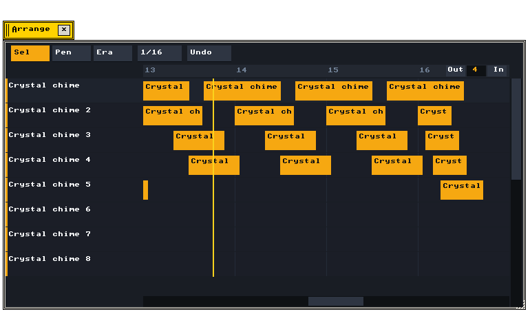
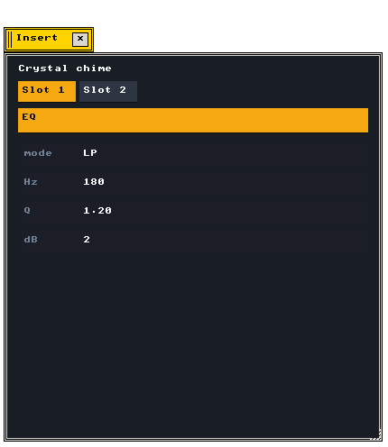
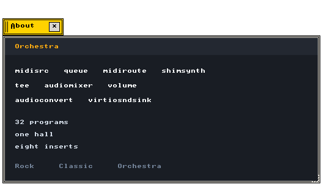

← アプリケーション一覧 (Applications Index)
管弦楽（Orchestra） — このマニュアルは、B-System のステージ DAW Orchestra を、七つの窓・三つのテンプレート・ひとつのホール・32のプログラム・八種のインサート・セッションファイル・SMF と WAV の交換まで、章を順に積み上げて説明します。
"This manual is a single-page guide. Each chapter uses only the words the chapters before it have defined, and every number it prints is a number the running program prints too."
画面プレビュー (Screen Preview)

実機描画フレームバッファより自動抽出された管弦楽・MIDIオーケストラ演奏画面。アルバム第一曲『Carol of the Bells』を読み込んだ状態のステージ窓 (780×520)。

実機描画フレームバッファより自動抽出されたアレンジ窓 (760×420)。17トラックのイベント線が小節格子に並ぶ。

実機描画フレームバッファより自動抽出されたピアノ窓 (760×480)。鍵盤・グリッド・ツール行・Undo ボタン。

実機描画フレームバッファより自動抽出されたスコア窓 (720×320)。選択トラックの一段ノートを高位記号つきで描く。

実機描画フレームバッファより自動抽出されたミキサー窓 (780×460)。トラックストリップとマスター列。

実機描画フレームバッファより自動抽出されたインサート窓 (420×460)。二つのスロットと P1〜P4 のノブ。

実機描画フレームバッファより自動抽出された透過バージョン情報窓 (520×270)。リサイズ不可の唯一の窓。
この案内書の読み方 (How to Read This Manual)
この案内書は十二章建てです。第一章が材料（装置と層）を、第二章が時間（拍・チック・音高）を、第三〜第五章が音の作り方（プログラム・インサート・グラフ）を、第六章以降が使い方（窓・操作・テンプレート・ファイル・アルバム）を順に取り扱います。各章の冒頭に「前提」として前章までのどの語彙を使うかを書きます。数式には番号（式 1、式 2 …）をふり、本文はその番号を戻って引きます。各節は日本語で機能を述べ、英語でその設計理由を述べます。日本語の段落は操作性、英語の段落は根拠の担当です。
前提: なし（この節）／ Uses: nothing yet — this section only declares how the rest is written.
Why the order is the content. A manual that lists buttons first teaches memorisation. This one teaches a vocabulary: a bar, a tick, a slot, an insert, a budget. Every later chapter is written with those words alone, so that a reader who has finished chapter five can read chapter nine without a dictionary and without a guess. The division of languages follows the same rule. Japanese describes what the desk does when it is used. English states why it does it that way and what would break otherwise. Neither layer repeats the other.
Where the numbers come from. Every figure printed here — 73408 bytes, 48 slots, 632 µs, 32 programs, 960 ticks — is a figure the running program can print itself, and each is stated in the specification doc/txt/ORCHESTRA.txt and implemented in src/media and src/demo. Where the desk does not do something, this manual says so in chapter twelve rather than leaving it unstated.
第1章 材料 — 装置と三つの層 (Foundations)
前提: なし。この章は装置・層・四つの数だけを定義する。以降の章はここで出た語を使う。
1.1 三つの実践 — Rock・Classic・Orchestra
Orchestra はステージ用の DAW です。想定する使い手は三つに固定されています。Rock は生バンド（キック、スネア、ハット、ベース、ギター、キー、リード、ボーカルの八トラック）。Classic は声と古典楽器（ボーカル、ピアノ、フルート、バイオリン、チェロ、コンティニュオの六トラック）。Orchestra はフィルハーモニーの配置（第一バイオリンから打楽器まで十六のモノフォニックトラック）。この三つ以外の用途を、この案内書は扱いません。同様に、チューナー、Logger、Click & Cue、Router、レコーダ、Monitor、シーンマネージャといった別商品は存在しません。Orchestra の診断は窓ではなく、デスクの上の一行のテキストです。
Three practices, not a market. Orchestra is the only DAW specification in B-System, and it is written for a fixed set of users rather than for a general audience. The reason is structural: the tone of every sound is produced by a hand-written procedure, and a procedure has to be chosen, tuned and budgeted. Three practices give thirty-two programs that can be named, measured and defended. A fourth practice would mean a second set of procedures, a second budget, and a second manual. Diagnosis is text on the desk rather than a separate product for the same reason — an extra window is an extra layer of promise that the desk itself already has to keep.
1.2 四つの固定された数
Orchestra を使ううえで暗記が必要な数は四つだけです。
1 サンプルレートは 48000 か 44100 の二択で、既定は 48000。
2 ホスト周期は 1024 フレーム（48000 で 21.3 ms、44100 で 23.2 ms）。
3 合成の量子 Q は 32 フレーム。
4 セッションファイルは 73408 バイト。この四つは設定項目ではなく、コードのリテラルです。
wanted.samples = 1024 は
virtio_sound_open のなかに書かれていて、Q は
RENDER_BLOCK の 32、73408 は 128 + 64×96 + 16×100 + 4096×16 です。
48000 / 44100Hz の二択のみ
1024フレーム = 21.3 / 23.2 ms
Q = 32合成量子
73408セッションのバイト数
音の出口は virtio サウンドの五つの呼出だけです。呼び出しは open・write・close・is_ready・get_queued_bytes。装置から読む呼出は存在しません。回線は int16、_INTERLEAVE（L,R,L,R）、little-endian。open はすでに使用中の装置を乗せ替えます。周期を取り出す呼出はないので、周期は上の固定数として扱うほかありません。
The four numbers are not dials. A conventional DAW offers a buffer-size slider, a sample-rate picker and an import size. Orchestra offers none of them, because each would move a deadline that the admission test in chapter five has to compare against. Fix the host period at 1024 and the block quantum at 32, and "did the graph make it?" becomes an arithmetic question with one answer per sample rate. Fix the session file at 73408 bytes and a file can be validated by its length before a single byte is read. The missing read path is a fact of the driver, not an omission of the desk: audio leaves, and the only thing that comes back is the depth of the queue.
1.3 三つの層と行の上限
Desk and session (src/media, 10 files, 7712 lines)
orchestra.c 957 menu, tick, commands, layout
orchestra_stage.c 409 W_STAGE
orchestra_arrange.c 1037 W_ARRANGE
orchestra_piano.c 697 W_PIANO
orchestra_score.c 924 W_SCORE
orchestra_mix.c 295 W_MIX
orchestra_insert.c 236 W_INSERT
orchestra_about.c 79 W_ABOUT
orchestra_session.c 1761 session file, undo
orchestra_smf.c 1317 SMF
|
v
Media (src/media/gst_rt.c + include/media/gst_rt.h = 2000)
|
v
System (virtio_sound_*, async_rt.h, files in /SYS)
図1-1 三つの層と、各ファイルの実行数。行の順はレイヤの順ではありません。
デスクは描画し、メニューを持ち、gst_rt.h に公開されたものだけを呼びます。セッション（orchestra_session.c と orchestra_smf.c）は wnd.h を含まず、描かず、装置へ書きません。メディア層は wnd.h・app_menu.h・dp.h を含みません。システムはメニューを見ず、Rock / Classic / Orchestra という名前を知りません。行数の上限は三つのカウンタで管理されます。窓とコマンドの八ファイル合計は 4000 行まで（現在 4634 行で、12.1 節の既知の限界）、セッション 1800 行まで、SMF 1400 行まで。gst_rt.c とそのヘッダは 2000 行で、三つのカウンタに入りません。
Arrows only point down. The layering rule is enforced by includes, not by review: the desk cannot reach the device, and the media cannot reach the window system. That is what makes the desk portable across the seven targets in chapter twelve, and what makes a rendering bug unable to corrupt a file. The line ceilings exist because a paint routine and an algorithm are not equally expensive to read; the rule is to cut drawing and comments first, and never a table or an algorithm. The desk is one POD, OrchView, published under a seqlock, so the boundary is a data snapshot rather than a call graph.
第2章 音楽時間 — 拍・チック・音高 (Musical Time)
前提: 第1章のサンプルレートと量子 Q。この章のチックは第九章の SMF まで一直線に使われます。
2.1 拍・小節・テンポ
拍（beat）は BPM が数える単位です。BPM は 40 から 240 までの整数、分子 num は 1 から 12、分母 den は 2・4・8・16 のいずれか。
拍は分母の音符です。den が 4 なら拍は四分音符、8 なら八分音符、2 なら二分音符、16 なら十六分音符。小節の長さは拍の num 倍です。
式1 T_beat = 60 / BPM
T_bar = T_beat × num
T_quarter = T_beat × (den / 4) = 15 × den / BPM
例: 96 BPM・6/8 なら T_beat = 0.625 秒（八分音符ひとつ分）、T_bar = 3.75 秒（小節に六つの八分音符）、四分音符は 1.25 秒。
Why the denominator defines the beat. Counting the beat as the note the denominator names, rather than always as a quarter, is what makes 6/8 unambiguous: at 96 BPM a 6/8 bar is 3.75 s, six eighth-notes, exactly what a player expects. The cost is that "quarter note" is no longer a constant duration, so the desk keeps one extra factor — den/4 — wherever a quarter is meant. The tempo range 40–240 is a validator, not a preference: outside it, the session file is refused (chapter nine) and a menu change is refused with the counter refuse_tempo.
2.2 チックとスナップ
Orchestra の内部時計は
ORCH_PPQ = 960 チック／四分音符です。拍あたりのチックは 3840 / den、小節あたりは num × 3840 / den。編集グリッド（snap）は四つの量子だけを持ちます。
式2 snap(t) = floor(t / q) × q
BAR = num × 3840 / den （小節）
BEAT = 3840 / den （拍 = 分母の音符）
8TH = 480 （固定）
16TH = 240 （固定）
6/8 では BEAT と 8TH の量子が一致します（どちらも 480 チック）。
チックとサンプルの変換は
整数演算だけです。float の音楽スケールは存在しません。
式3 sample(tick) = floor((tick × f_s × den + 32 × BPM) / (64 × BPM))
式4 D = 64 × BPM
tick(N) = floor(((N + 1) × D − D/2 − 1) / (f_s × den))
検算: f_s = 48000, den = 4, BPM = 128, tick = 40 → sample = 938
sample 938 → tick 40（40.04）, sample 937 → tick 39
MIDI クロックは常に 24 パルス／四分音符（インターバル 40 チック）で、拍が四分音符でないときも変わりません。0xF8 はどこにも出力されず、OrchView.midi_clock のカウンタだけが増えます。
Integer time, twice. The two conversions above are the only place where musical position becomes memory position, and they are integer in both directions so that a tick round-trips to itself. A float scale would let a session drift between the arrange grid and the file; the worked check (tick 40 → sample 938 → tick 40) is printed in the specification precisely because rounding is where a naive implementation fails. The half-denominator offset in equation 3 is not cosmetic and cannot be moved by rearranging the division. MIDI clock stays at 24 per quarter because that is the wire convention, while the desk's own grid stays at 960 — the two are deliberately not the same number.
2.3 音高 — 12平均律と転調の列
音高は 12 平均律です。MIDI キー n は 0 から 127。
式5 f(n) = 440 × 2^((n − 69) / 12)
実際に鳴る音は、四つの段を経て決まります。① トラックのキー分割（key split）が
[key_lo, key_hi] の外を捨てる（lo=0 かつ hi=0 は 0..127 と読む。分割は 0..127 / 0..59 / 60..127 の三位置を
orch_cmd_split が mod 3 で回す）→ ② トラックの transpose → ③ プログラムの transpose → ④ 0..127 へクランプ → 式5。ただし式5 は呼び出しごとに powf を計算しません。
s_pitch[128] の表を起動時に一度だけ埋めます。
Why a table and a clamp. Frequency is computed on the hot path, so it is a lookup, and the lookup has to be bounded before it is indexed — hence the clamp to 0..127 after both transposes. The split zone is a three-position switch rather than free ranges because the file stores exactly two bytes (key_lo, key_hi) and the desk must never offer a control the container cannot carry.
2.4 ベロシティ・音量・パン
強弱は速さ（velocity, v_m = 0..127）から振幅へ換算します。u = v_m / 127、領域は 0.08–0.45、カーブは
vel_curve の 0・1・2 の三つです。
式6 v0 = 0.08 + 0.37 × u （線形）
v1 = 0.08 + 0.37 × √u （遅い立ち上がり重視）
v2 = 0.08 + 0.37 × u² （強い打鍵重視）
式7 G_trk = 0 （volume = 0 または mute）
G_trk = 0.08 + 0.37 × (volume / 127) （それ以外）
式8 p = (CC10 − 64) / 64 ∈ [−1, +1]
G_L = cos(π/4 × (p + 1)) G_R = sin(π/4 × (p + 1))
pp 0.08–0.12 / mp 0.14–0.18 / mf 0.20–0.26 / f 0.28–0.36 / ff 0.38–0.45 は、すでに計算された v の帯域名であり、別の曲線ではありません。式7 で volume 64 → 0.2665、40 → 0.1965。CC127 は p = 63/64 で +1 には届きませんが、式はそれに合わせられません。
One scale, three curves, no second curve. Velocity shaping is the only place a performer's touch reaches the sound, and it is deliberately a single linear family with three exponents. There is no hidden curve that recentres 64 into the middle of the mf band: the numbers above are what the desk computes, so a mixer reading of "64 is mf" is a reading of the same line, not of a second model. Pan follows the equal-power pair, and CC10 maps onto it with the MIDI range, which is why the extreme right is 63/64 rather than 1. The desk keeps the honest value instead of rescaling the formula to hide it.
第3章 音源 — 32のプログラムと48スロット (Programs and Voices)
前提: 式5 の音高（第2章）、vel と G_trk（第2章）、キー分割（第2章）。この章の「スロット」は第五章の予算と第九章のファイルで使い直します。
3.1 プログラム表 — GM の三十二個
プログラム（音色番号）は PROG[32] という三十六行ではなく三十二行の不変テーブルです。各 row は「GM の番号 → 既存のシム関数の呼び出し」を定めただけで、新しい楽器の C 関数は一本も書かれていません。GM の番号がそのまま行番号になるのは、役割が一致する場所だけです。残る 96 の GM 番号は未定義で、指定すると refuse_program が増え、トラックの旧音色のまま残ります。チャンネル10 のドラムマップは存在しません（どの経路も channel と 10 を比較しないため）。表の tr はプログラム側の転調、p はpoly（トラックあたりの声の天井）、鍵はト音／ヘ音のどちらの記号譜面を描くかです。
| GM | 名称 | シム（呼ばれる手続き） | 鍵 | p | tr | データ |
|---|
| 0 | Piano | shimGrandPiano | tr | 6 | 0 | duration 1.2 s、ハンマーはシムの内側 |
| 4 | Rhodes | shimFloat | tr | 1 | 0 | dur < 0.50 s なら tone_dance、ほか tone_glass |
| 26 | Guitar | shimGuitar | tr | 1 | 0 | LP 2800 Hz、Q 1.0 |
| 32 | Upright | shimWaddle | bs | 1 | 0 | LP 180 Hz、shimWaddleD 経由 |
| 33 | Bass | shimIndustrialBass | bs | 1 | 0 | シム LP 2600、Q 4.5、sweep 420 |
| 38 | Continuo | shimPedalBass | bs | 1 | 0 | MMA の Synth Bass 1 という名前は名乗らない |
| 40 | Violin | shimViolin | tr | 1 | 0 | 3ノイズ／2サウ／1ローパス。LFO と peaking は入らない |
| 41 | Viola | shimViolin | tr | 1 | −7 | 同じシム。アルト記号は使わない |
| 42 | Cello | shimCello | bs | 1 | 0 | isPizz = 0、シムの Q = 20·log₁₀(2.2) |
| 43 | Contrabass | shimCello | bs | 1 | −12 | LP 400、Q 2.2。shimPedalBass は他が使用中 |
| 46 | Harp | shimGrandPiano | tr | 1 | 0 | duration = 2.4 s（既存パラメータ） |
| 47 | Timpani | shimTimpani | bs | 1 | 0 | LP 260、one-shot |
| 52 | Voice | shimSaxFlute | tr | 1 | 0 | filter_hz 800 はフォルマントのデータ、歌声の録音ではない |
| 56 | Trumpet | shimCyberLead | tr | 1 | 0 | LP 1800、Q 2.0、k = 0 |
| 57 | Trombone | shimCyberLead | bs | 1 | 0 | LP 900、Q 2.0、k = 0 |
| 58 | Tuba | shimCyberLead | bs | 1 | 0 | LP 400、Q 1.5、k = 0 |
| 60 | Horn | shimCyberLead | tr | 1 | 0 | LP 800、Q 2.0、k = 0 |
| 68 | Oboe | shimSaxFlute | tr | 1 | 0 | BP 1800、Q 8.0 |
| 70 | Bassoon | shimCello | bs | 1 | 0 | LP 900、Q 1.5、アルコ（isPizz = 0） |
| 71 | Clarinet | shimSaxFlute | tr | 1 | 0 | BP 1500、Q 5.0 |
| 73 | Flute | shimSaxFlute | tr | 1 | 0 | BP 2000、Q 5.0、息の雑音 0.025 はシム内のまま |
| 80 | Pulse | shimPulseSquash | tr | 1 | 0 | one-shot |
| 81 | Lead | shimCyberLead | tr | 1 | 0 | LP 3800、Q 4.0、k = 25 はテンプレートが SAT を置いたときだけ |
| 90 | Pad | shimSwarmatron | tr | 1 | 0 | LP 950、Q 2.5、8オシレータでもスロットは1 |
| 98 | Bell | lilcu64_shim_pulse_bell | tr | 1 | 0 | 2オペレータ FM（式12）。8本のサイン波ではない |
| 102 | Dance | shimDance | tr | 1 | 0 | one-shot |
| 103 | Zap | shimGlitchZap | tr | 1 | 0 | HP 1800、one-shot |
| 112 | Chime | shimDing | tr | 1 | 0 | decays 既存、既定 0.70 s |
| 116 | Kick | shimKick | bs | 1 | 0 | Taiko ではない。pitch = f(n) |
| 117 | Snare | shimSnare | tr | 1 | 0 | BP 2400。MIDI の高さは無視（vel が周波数枠へ） |
| 118 | Hat | shimHiHat | tr | 1 | 0 | シム HP 7500、Q 1.0。Rock テンプレの EQ は 7000 / Q 0.7 で別物 |
| 119 | Ind.Kick | shimIndustrialKick | bs | 1 | 0 | 高さはシム内で固定（160 → 42 Hz） |
番号 24 は存在しません。shimPianoHammer と shimPedalSwoosh は補助の手続きで、ディスパッチャからは呼ばれません。shimFrogCroak（2）と shimIndustrialSnare（16）は番号を持ちますが、どの row も指さないため、プールのイベントからたどり着けません。3つの打楽器（Snare・Hat・Ind.Kick）は vel を周波数の引数に流し込みます。velocity 110 以上でスネアはリムショット、100 以上でハイハットは開きます。
A program is a call site. The desk has no synthesis engine of its own and no sample library; a program is a row that names an existing procedure and the data that procedure needs. That is why there are 32 programs instead of 128: each row had to be measured against the block budget of chapter five before it could be published. The single exception worth learning is program 98, Bell, which goes to a two-operator FM voice rather than to the partial-shim dispatcher — the ratio and index below are the paper's pair, 2.76 and 1.8, not an invented one. Refusing the other 96 GM numbers is a deliberate act: an unmapped number that silently picked a default instrument would make a session file mean one thing on the desk and another on paper.
3.2 声の割り当て — 48スロットと盗み
DAW 側のスロットは
s_slot[48] の静的なプールで、ひとつのスロットはひとつの MIDI 音符です（部分音ではありません）。合成器自身にも
MAX_VOICES 48 が別々にありますが、数字が一致するだけでプールは別です。割り当ての順序は「空いていれば取る」ではありません。
式9 proxy(slot) = gain × exp( −(npos − t0) / f_s ) （τ = 1 秒）
① トラックの占有人数 ≥ poly → 同じトラックの式9で最も静かなスロットを盗む
② そうでなく、空_slot があれば index 小から取る
③ 空がなければ、全プールで式9の最静音を盗む（track = −1 で探す）
poly はロード後の天井で、
ファミリーはこれを下げるだけです。Rock と Orchestra は全トラック 1、Classic はプログラム 0（ピアノ）だけ 6、ほか 1。盗みは
steal_voice を増やします（書き出し中を除く）。黙らせたスロットは
wa_release_bus_key(bus, key) と、ベルなら
lilcu64_voice_release で消えます。シムを呼んだあと何も起きなかった場合（ノードが採れなかった等）は、スロットをプールへ戻して
shim_landed がノート refused を数えます — この場合だけ、戻り方が「ハング」ではなく「返却」になります。
Stealing is defined by loudness, not by age. The desk ranks a held slot by the product of the gain written at note-on and an exponential decay with a one-second time constant. Age alone would cut a long piano note that is still audible, and gain alone would keep a note that has already faded to nothing; the product is the honest proxy for what the listener can still hear. The per-track ceiling is checked before the global one, so a busy track cannot starve its own channel by reaching into another track's notes first. During WAV export the same steals happen but are not counted, because a render artifact must not depend on who is listening.
3.3 ワンショットとノートオフ
one-shot（shot = 1）は九つの row です。47 Timpani 1.2 s、80 Pulse 2.4 s、102 Dance 0.85 s、103 Zap 0.12 s、112 Chime 0.70 s、116 Kick 0.16 s、117 Snare 0.15 s、118 Hat（vel ≥ 100 なら 0.28 s、そうでなければ 0.055 s）、119 Ind.Kick 0.22 s。長さはその row の方針ではなく pick_dur（dur10/100）が返し、one-shot はノートオフを聞きません。期限が来るまで slots_expire が消します。プログラム 98 Bell は shot = 0 で、別の分岐を通ります。減衰は 1/(1.8 × f_s) — 1.8 秒です。なお、本物の鍵盤から鳴る live note-on（8.0 s 上限、ノートオフで切る）は、このビルドでは聞こえません。理由は第七章 7.4 にあります。
Percussion length belongs to the instrument. For the nine one-shot rows the duration is a property of the procedure, not of the recorded performance, so note-off is ignored and the slot is released by expiry. This keeps a hi-hat from being truncated to the length of a mouse drag and matches the shim bodies that already exist. The consequence the manual must state plainly: an event drawn with the pencil gets the length of the snap quantum, not the instrument's fixed length, except when the row is a shot and the pass is the armed record pass, where the event's own duration wins.
3.4 音の式 — シム・FM・ビクヮード
シム（部分音合成）は各部分音 A_k に窓 W_k とフィルタ H_k をかけて重ねます。包絡はピーク V_peak と時定数 tau で決まります。
式10 y(t) = Σ_k A_k(t − t0) · W_k( 2π f_k (t − t0) + φ_k ) · H_k
式11 A(t) = V_peak · exp( −(t − t_attack) / tau )
式12 y(t) = A_c sin( 2π f_c t + I(t) sin( 2π f_m t ) )
Bell: f_m/f_c = 2.76、I = 1.8
式13 y[n] = b0·x[n] + b1·x[n−1] + b2·x[n−2] − a1·y[n−1] − a2·y[n−2]
| 型 | b0 | b1 | b2 | a0 | a2 |
|---|
| LP | (1−c)/2 | 1−c | (1−c)/2 | 1+a | 1−a |
| HP | (1+c)/2 | −(1+c) | (1+c)/2 | 1+a | 1−a |
| BP | a | 0 | −a | 1+a | 1−a |
| peak | 1+a·A | −2c | 1−a·A | 1+a/A | 1−a/A |
w₀ = 2π f₀ / f_s、a = α = sin w₀ / 2Q、c = cos w₀、A = 10^(G_dB/40)。三型とも a1 = −2c。a0 で割って正規化します。
Two Q conventions, never mixed. The coefficients above are the Audio EQ Cookbook — a public formula, not a library. The EQ insert uses them with alpha = sin(w0)/(2Q). The older wa_filter in the synth takes its Q argument in decibels for LP and HP (alpha = sin(w0)/(2·10^(Q/20))) and linearly for BP, so a JS body that says Q 2.2 becomes 20·log₁₀(2.2) on the way in. Converting between them is the only translation the desk performs on a filter, and mixing them silently is the failure mode the manual warns about. Note also that wa_filter has no peaking type at all — a peak exists only in the insert's own biquad, which is why violin and viola in the table above are three nodes rather than the five-biquad shape of the web prototype.
第4章 インサートとホール (Inserts and the Hall)
前提: 式13 のビクヮード（第3章）、G_trk とパン（第2章）、小節と拍（第2章）— ディレイの長さは十六分音符の長さから決まるためです。
4.1 インサートは要素ではなく位置
インサート（挿入エフェクト）は九つの id です。ORCH_INS_BYPASS = 0、EQ = 1、SAT = 2、DELAY = 3、REVERB = 4、CHORUS = 5、GATE = 6、TREMOLO = 7、LIMITER = 8。 tenth はありません。インサートはグラフの要素ではありません。要素なら、第六章のトラック64本が第五章の上限16を突き破ってしまうからです。トラックには二つまで（ins0 と ins1）、マスターには一つだけ（master_lim）で、マスターが許す値は LIMITER と BYPASS の二つだけです。他を指定すると refuse_insert が増え、状態はそのまま、ステータス行に "insert" が出ます。
The slot imitates a VST slot, not its format. A binary plug-in host would need a loader, allocations on the hot path and a heap — three things the real-time contract forbids. So the insert is a place in the chain whose algorithm is chosen from a closed catalogue of eight, and the catalogue is closed because each entry has a state budget. The ninth id, LIMITER, is reserved for the master and enforced at the setter, not at the renderer, so the desk cannot get into a state it cannot play.
4.2 パラメータ一覧 — P1〜P4
どのインサートも整数四つ（P1〜P4）だけを受け取ります。値は編集のたびに
clamp_row で、レンダリングのたびに
clamp_i でもう一度、下の範囲へ締められるので、ファイルに書かれた範囲外の数値は聞こえません。
| 型 | P1 | P2 | P3 | P4 | 式 |
|---|
| BYPASS | パラメータなし | — |
| EQ | 0 LP・1 HP・2 BP・3 peak | Hz 20..20000 | Q（百分の1）10..1000 | gain dB −24..+24（LP/HP/BP は無視） | 式13 |
| SATURATOR | k 0..100（既定 25） | 0 | 0 | 0 | 式14 |
| DELAY | k 1..16（十六分音符数） | feedback 0..90 | wet 0..100 | 0 | 式16 |
| REVERB | send 0..127（トラックの項目） | room 0..100 | damping 0..100 | wet 0..100 | 式15 |
| CHORUS | d0 ms 1..40 | depth ms 0..10 | f_lfo 0.1Hz単位 1..50 | mix 0..100 | 式17 |
| GATE | 閾（百分の1）1..100 | tau ms 1..500 | hold ms 0..500 | 0 | 式18 |
| TREMOLO | d 0..100 | f 0.1Hz単位 1..120 | 0 | 0 | 式19 |
| LIMITER | パラメータなし（マスター専用） | 式20 |
式14 C(x) = (3+k)·x·(20π/180) / (π + k·|x|) x ∈ [−1, 1]
式15 wetL[i] = wetR[i] = 0; wa_reverb_process(send, wetL, wetR, n);
wetL[i] −= send[i]; wetR[i] −= send[i]
式16 L = round( k × T_16th × f_s )
式17 d(n) = d0 + depth · sin( 2π f_lfo n / f_s )
式18 e[n] = max(|x[n]|, e[n−1] × λ), λ = exp( −1 / (tau × f_s) )
式19 y ×= (1 − d) + d · sin( 2π f n / f_s )
式20 |x| ≤ 0.85 は素通し、超えた分は d/(1 + 2.5d) で圧縮、1.25 で 1.05
s = (int16_t) lrintf( clamp(x, −1, 1) × 32767 )
Four integers per slot. Keeping every parameter an integer in a documented range is what lets the session file carry inserts in eight i16 slots per track (chapter nine) and lets the validator reject an out-of-range file before anything renders. The saturator curve is pre-sampled into curve[1024] rather than evaluated per frame: the table is built at boot with k = 25 and rebuilt by the UI tick from the last SAT insert found on any track, so the renderer only reads and BSS does not grow per insert. Equation 15 subtracts the dry send because the existing reverb body adds dry to wet; that is also why enabled has to stay 1 for the whole session — with the reverb off, the subtraction would leave silence instead of the wet signal.
4.3 ホールはひとつ
リバーブは「もう一つのホール」を作りません。room・damping・feedback・wet の四つ（各 0..100）はセッション全体で共有される一つのホールの旋钮で、ファイルのヘッダに置かれます。トラック側の REVERB インサートの P1 はそのトラックの send として読み、P2〜P4 は共有ホールの room・damping・wet を更新します（走査で最後に見つかったものが勝つ）。feedback は P1〜P4 のどこにもなく、ファミリーのテンプレートとセッションファイルだけが書きます。wa_set_reverb は REVERB がひとつも無いときにも呼ばれ、そのときはセッション側の三つの値が渡ります。ラインは 93 BPM のままで、ウェット信号の内側に残ります。
One hall, because a hall is memory. The reverb is four comb filters and four all-passes per channel, with line lengths scaled by s_sr/44100 and two delay buffers fixed at 44100 samples. A second hall would double a static buffer that cannot grow, so the design gives each track a send into the one hall instead. That is also why the manual can promise that adding a REVERB insert never allocates.
4.4 トラックの上の順序とラインのプール
一本のトラックの中で信号は必ずこの順に通ります。
① インサート0 → ② インサート1 → ③ フェーダ（式7）→ ④ パン（式8）→ ⑤ send の加算 s_send += (L+R) × send/127。mute と solo は G_trk = 0 に落ちます。ホールはマスターのリミッタより前に混ぜ込まれます（マスターは s_wl − s_send を加えてから総音量を掛け、LIMITER のときだけ soft clamp を回します）。クリックは別のバス65で、send 0・pan 0・両チャンネル 0.7071固定 — mute/solo は及ばず、フェーダも通りません。ラインのプールは静的で、ディレイ8本・コーラス8本。
同一アルゴリズムは九つ目に到達しません：スロットを回して九つ目を置こうとすると、そのスロットは BYPASS になり、
refuse_insert が増えます。
PS2 のライン長
1ライン 2048 サンプル（8 × 2048 × 4 = 65,536 B）。スナップショットが倍で、ディレイ＋コーラス = 284,672 B。
ほかのターゲット
1ライン min(f_s, 48000) サンプル（8 × 48000 × 4 = 1,536,000 B）。スナップショット込みで 3,225,600 B。コーラスは 2400 サンプル固定。
Fixed pools, counted refusals. Delay and chorus lines come from static pools with owners, so a line is reassigned rather than allocated, and the assignment is stable while the session is not edited. The PS2 image pays for the pool in RDRAM and therefore gets a shorter line; the manual states the two numbers because a 16-step delay at 48 kHz fits on a host and is clamped on the console, and a clamp is reported (refuse_insert and the "truncated" family of status texts) instead of being hidden.
第5章 グラフと予算 (Graph, Budget and Latency)
前提: 量子 Q とサンプルレート（第1章）、スロット（第3章）、インサートとホール（第4章）。この章の「周期 T」が第七章の拒否と第十一章の比較で使い直されます。
5.1 九つの要素 — _static_ な接続図
音が出るまでには九個の要素が並んでいます。グラフは
gst_rt_boot の中で一度だけ組まれ、以後 組み替えられません。登録されている型は十個（midisrc, queue, midiroute, shimsynth, audioconvert, tee, audiomixer, volume, identity, virtiosndsink）ですが、コンサートが使うのは九個で、
identity は入りません。工場名を文字列で照合し、知らない名前（昔 fluidsynth と書かれていた行も含めて）は
refuse_factory を増やし、0 を返し、前のグラフを壊しません。
OrchView.element_count が9を返すのはこのためで、装置メニューの「診断 (Diag)」が同じ数を読みます。
midisrc -> queue -> midiroute -> shimsynth
MIDI split lilcu64
|
v
audioconvert -> tee
F32 / \
v v
audiomixer send (track field)
volume
virtiosndsink
virtio_sound_write
図5-1 静的な接続図。tee の枝は二本だけ（ドライなミックスとトラックの send）で、両方は同じ一周で計算されます。ミキサが重ねるのは最大66本 — トラックのバス1..64 と、クリックが点いているときのバス65 — で、バス0（デモの音）は並びに入りません。
データ型（caps）は三つです。MIDI、Q = 32 フレームの float32（1か2チャンネル、セッションのレート）、同じ大きさの int16。交差の規則は「完全一致」で、文字列のパースはありません。イベント語彙（EOS、SEGMENT、CAPS、GAP、SEEK など）はメディ層に存在せず、状態変化は「代入 + 拒否」であってメッセージではありません。位置は npos、ループ端は loop_tick、深さは gst_rt_queued_ms()。すべて静的プールです。MIDI トークン8、録音リング64、スロット48、ミックス平面 66×Q、作業行6本、配線バッファ Q×2、ディレイライン8、コーラスライン8。
A closed graph, built once. A media graph that can be rebuilt at runtime needs a heap, and a heap on the audio path makes the block deadline unprovable. So the topology is a constant: the ten names, the two tee branches, the bus list and every buffer are fixed at boot. The ceiling of sixteen elements is a ceiling on names, not on bodies — each body is one function in render_graph. An insert is not an element for exactly this reason: sixty-four tracks with slots would blow a limit placed on the vocabulary.
5.2 632 µs と admission
一周期の長さは決まっています。
式21 T = Q / f_s = 32 × 1 000 000 / f_s
48000 Hz → 666 µs 44100 Hz → 725 µs
| ステップ | WCET（µs） |
|---|
| queue | 8 |
| midiroute | 24 |
| shimsynth（16声まで） | 340 |
| 鳴っているトラックのインサート（16×2まで） | 120 |
| tee・mixer・volume・pan・aux・limiter | 100 |
| audioconvert | 16 |
| virtiosndsink | 24 |
| identity（入った場合。コンサートでは0） | 4 |
七行の合計 632 µs がコードの公開する値です（636 は identity を入れた側の数字で、実ビルドでは生まれない）。632 ≤ T が常に成り立つので、グラフは Play を通ります。
Play（再生）は審査を通過します。条件は三つ。状態が READY か PAUSED であること。virtio_sound_is_ready() が真であること。上の合計が T を越えないこと。どれかを欠くと gst_rt_set_state は 0 を返し、ステータスに "play" を書き、状態はそのままです。これは第七章の拒否の一覧に入ります。ミッドナイトの missed deadline は時間を伸ばしません。デバイスへ量子は書かれず、npos は Q だけ進むのでテンポは変わらず、増えるのは chain_drop（キューが2048フレーム以上）か drop_audio（デバイス未準備、または書負）です。qos_drops はこのビルドでは動きません（遅延試験の旗はリセットされるだけで立つ経路がないため）。
Publish the number, then compare. The WCET is not a measured average and the manual does not call it one; it is a declared sum of per-step ceilings, and the admission test is the only place the sum is used. This is what makes the deadline checkable on hardware that has no profiler: the same 632 that the specification prints, gst_rt_wcet_us() returns, and the refusal path prints instead of degrading. The midisrc is excluded from the sum because it belongs to the INPUT plane, whose budget is 500 µs and whose dispatcher, in this build, has no caller (12.1).
5.3 ペーサー — 追い付きは64回まで
音を回す入口は三つに分かれ、共用の tick はありません。
orchestra_ui_tick() は UI の一周に一度（六か所）、
orchestra_audio_service(now_us) はキャセットの呼出しと同じ場所で、
orchestra_audio_tick() は中の専用です。
service(now_us):
if !booted or state != PLAYING: return
T = period_us()
if render_perf_us() == 0: （時計が無いビルド）
audio_tick(); return （1回だけ、キューを見ない）
if due == 0: due = now_us
for i in 0 .. 63: （最大64回の追い付き）
qf = queued_bytes / 4 （1フレーム = L,R int16 = 4 バイト）
if qf >= 2048: break （一杯。ここからは chain_drop）
if qf >= 1024 and now_us < due: break （周期ぶん以上、まだ早い）
audio_tick() （Q = 32 フレームを書く）
if now_us >= due: due += T （0に戻さない）
動作点は「追い付き中は1周期未満、テンポを保っているときは1〜2周期」。4へ足して埋める経路はありません。 別個のオーディオ面と SCHED_FIFO はこのビルドには無く、保証は上の合計と追い付き上限です。
Catch-up is bounded, and so is silence. The pacer can render at most sixty-four blocks per call, so a stalled host cannot make the desk spend unbounded time in one loop, and the two queue thresholds keep it from writing into a device that is already full. There is no separate audio thread in this build: the audio actor is driven from the same UI passes that paint the desk, which is exactly why the guarantee is the published sum rather than a scheduler priority. If a single invariant ever fails, orch_check raises a sticky flag and every later block returns REFUSE — the desk goes quiet instead of clicking.
5.4 聞こえる遅れ — 三つの長さは交換しない
「遅延」という語は三つの別々な長さに使われます。混ぜないでください。
① ブロックの予算
632 µs の WCET を 666 µs（48000）または 725 µs（44100）の周期に収める、という算数。音の遅れではなく、間に合うかどうかの話です。
② INPUT 面
周期 1000 µs・予算 500 µs。MIDI 配送がこの中で戻る、という約束。ただし本ビルドでは配送の呼出元がありません。
③ 聞こえる遅れ
queued_frames / f_s。デバイスに残っているフレーム数を実際のサンプルレートで割った、測定された値です。
④ 参考：ホスト周期
1024 フレーム = 21.3 / 23.2 ms。メニューの「バッファ」は "Q 32 | host 1024" と出しますが、これは定数の表示で測定ではありません。
プルトが出す ms は測定値だけです。UI の一周が毎回 gst_rt_queued_ms() を呼び、その値を OrchView.queued_ms に入れ、メニューの右端へ書き、ステータス行の "q NN ms" にも使います。「0.8 ms」のような定数表記は禁止、「0.2 ms 未満」もこの章からは導けません（500 µs は 0.5 ms、632 µs は 0.632 ms）。5〜8 ms の round-trip もこのビルドの約束ではありません — ホスト周期が1024フレームなので、それを裏切るには128フレーム以下の backend が必要で、それは virtio_sound_open の値ではありません。
Latency is a measurement, or it is nothing. Three different lengths are routinely confused in audio writing: what a block is allowed to cost, what an input plane is allowed to cost, and what the listener actually hears. This manual keeps them apart and publishes only the third as a millisecond figure, because the first two are ceilings and the third is a queue depth that changes as you play. A constant "0.8 ms" label would be a claim with no instrument behind it, so it is forbidden rather than merely avoided.
第6章 七つの窓 (The Seven Windows)
前提: 三つの層（第1章）、トラックとシーン（第3・4章）。「表示」は第五章の測定値を読みます。
6.1 窓の一覧
窓は七つです。起動時に開くのはステージだけ、残りはウィンドウメニュー（またはコマンド）で開きます。それぞれ固定の初期サイズと初期位置を持ち、すべてリサイズ可能 — ただし
アバウトだけがリサイズ不可です（同じ幅・高さで作り、毎回サイズ変更を拒否するため）。
| 窓 | 日本語/英語の題 | 初期サイズ | 初期位置 | 役割 |
|---|
| ステージ | ステージ (Orchestra Stage) | 780 × 520 | 72, 40 | トランスポート、十六シーン格子、レベルメータ、メニューを描く唯一の窓 |
| アレンジ | アレンジ (Arrange) | 760 × 420 | 96, 72 | トラックの横並びとイベント線、小節の格子 |
| ピアノ | ピアノ (Piano Roll) | 760 × 480 | 120, 88 | 鍵盤、グリッド、ノート編集 |
| スコア | スコア (Score) | 720 × 320 | 140, 120 | 選択トラックの一段ノートの高位記号譜 |
| ミキサー | ミキサー (Mixer) | 780 × 460 | 48, 64 | ストリップ（vol・pan・send・mute・solo）とマスター列 |
| インサート | インサート (Insert) | 420 × 460 | 168, 96 | 二スロットと P1〜P4 のノブ |
| アバウト | アバウト (About) | 520 × 270 | 240, 160 | バージョン情報。リサイズ不可。モーダルではない |
W_STAGE, W_ARRANGE … という名前は読み方の規約で、窓の id は「コマンド番号 − 701」です（ウィンドウメニューの 701〜707）。状態行とレベルメータは窓ではなく、ステージの描画領域です。
One window family, one geometry model. Seven windows are built from the same desk helper, so a control that exists in two windows is drawn by one function and lands in the same place in both. The window identifiers are derived from the command identifiers rather than numbered separately, which keeps the menu and the window list from becoming two lists that can disagree. About is the single non-resizable window because it is a printed card, not a workspace.
6.2 三つのレイアウト — WIDE・STACK・MIN
同じデスクが七つの広さで動きます。レイアウトの段階は幅と高さだけで決まり、すべての窓が同じ関数を読みます。
lay_mode(w, h):
h < 200 or w < 240 → MIN
w < 700 → STACK
それ以外 → WIDE
| 段階 | トランスポート | 十六シーン格子 | レベルメータ |
|---|
| WIDE | 九つのコントロールを一段（高さ28 px）：PLAY 64・STOP 64・REC 56・PANIC 72・TEMPO 72・NUM 40・DEN 40・CLICK 64・FAMILY 112 | 残幅 w − 44 が 540 を超えるときだけ | 必ず。高さ14 px |
| STACK | 三つずつの複数列、行のピッチ28 px | 次の行が y + 56 < h − 30 に入るときだけ | h ≥ 220 のときだけ。高さ12 px |
| MIN | 四つのボタン（幅 (w − 20)/4 を 24..88 にクランプ） | 出ません | 出ません |
WIDE ┌──────────────────────────────────────────────┐
│ PLAY STOP REC PANIC TEMPO NUM DEN CLICK FAMILY│
│ 1 2 3 4 5 6 7 8 (scenes, 8 per row × 2) │
│ L ▓▓▓▓▓▒▒░ R ▓▓▓▓▓▒▒░ 48000 Hz | q … │
STACK ┌───────────────────────┐ MIN ┌────────────┐
│ PLAY STOP REC │ │ PLAY STOP │
│ PANIC TEMPO NUM │ │ REC PANIC │
│ DEN CLICK FAMILY │ └────────────┘
│ (scenes if they fit) │ no scenes, no meters
└───────────────────────┘
図6-2 三段階の配置。シーン格子は八つずつ二行、セル幅は aw/8 を 24..120 にクランプ、ピッチ28 px。FAMILY ボタンは Rock / Classic / Orchestra を回し、テンプレートの適用がまだ確定していないときはラベルに "?" が付きます。
窓ごとに、細いときの出方は違います。アレンジのヘッダ幅は段階で変わり、スナップの表示は幅180以上、ピアノは MIN でスナップと Undo が出ず、スコアのツール行は幅700以上で出て、インサートは MIN でも二つのノブを残します。ミキサの列は68 px（WIDE）から52 px（狭い）へ縮み、編集ボタンは最小8×8 px、メータは最小2×2 px のときだけ描かれます。
Three tiers, not seven builds. The desk is one program with a mode switch, not a per-width build; the tiers exist because a stage box and a 480-wide handset cannot share a control layout. The manual states the thresholds so a reader can predict what disappears: scenes go before meters, meters go before the third transport row. What never disappears is the refusal — a control that cannot be drawn is not a control that silently does nothing.
6.3 表示域 — 状態行とメータ
ステータス行（この案内書では「状態」）は必ず次を出します。周波数、測定したキュー、drop、steal、smf。
48000 Hz | q 42 ms | drop 0 | steal 0 | smf 0 | PAUSED | Scene 3
行が70文字より短ければ状態語が、62文字より短く、かつ active なシーンに名前があればその名前が足されます。直前の操作が拒否だったときは、拒否の文（"play"・"note"・"session"・"insert"・"tempo"・"track"・"program"・"wav" など）が行を置き換えます。行を作るのは
orch_publish_idle で、描画関数ではありません。
レベルメータは二本（L/R）で、制限器のうしろのピークから clamp(round(peak × 100), 0, 100) を描きます。表示であって操作ではありません（掴んでも動かない）し、WAV 書き出し中は更新が止まります（第九章 9.3）。色は二十一種の ORCH_COL_* だけで、窓のコードに生の16進数は置いてありません（例外はチック溢れのマーカーのみ）。モーダルの会話窓はありません。
The status line is the diagnostic. There is no Monitor product and no diagnostics window; the counters of chapter three and the measured queue of chapter five are printed as one line, and a refusal replaces that line rather than appending to it. That is a deliberate economy: a reader who sees "insert" knows a cycle was refused, and a reader who sees the idle line knows the counters are still zero. The palette is a named set because a colour written twice is two decisions about one appearance.
第7章 操作 — メニューと実時間 (Operation)
前提: 第六章の窓と三段階のレイアウト、第五章の admission と状態（READY・PAUSED・PLAYING）、第二〜第四章の語（チック、テンポ、プログラム、インサート）。この章で新しい数は出しません。出るのは操作と、それが断られる条件だけです。
7.1 メニュー — 六つの見出しと三十七の項目
メニューバーはステージにだけ描かれ、しかも最後に描かれます（コントロールを置いてから orch_menu_paint）。ほかの六つの窓は menu_open に常に FALSE を返す関数を立てるので、どの窓が前面に出てもバーは一つです。見出しは六つ、上限は八（APP_MENU_MAX_HEADERS）、一見出しの項目上限は二十（APP_MENU_MAX_ITEMS）。最多的はファイル・コンサート・装置の九行、最短はシーンの二行。幅は呼び出し側が渡します（104・120・88・104・72・120 の順で合計 608 px、最後の見出しの右端が 642 px）。バーの右端の文字は第五章の測定したキューで、見出しに重ならなければ描かれます。
| 見出し | 項目（日本語 / 英語） | アクセラータ | コマンド | 何をする |
|---|
ファイル (F)
104 px | 新規作成 (New) | Ctrl+N | 101 | セッションを空にして PAUSED にする。Rock を確認なしで当てる |
| 開く (Open) ▶ | Ctrl+O | 102 | サブメニュー（Session・Bells・Caterpillar・Rising・TRON Init）。/SYS/orchestra.orch を読む |
| 上書き保存 (Save) | Ctrl+S | 103 | 必ず orchestra.orch へ書く（第九章） |
| SMFを読み込む (Load SMF) | Ctrl+L | 104 | /SYS/orchestra.mid を読む |
| SMFを書き出す (Save SMF) | Ctrl+M | 105 | type 1 を書く（一トラック = 一 MTrk） |
| WAVを書き出す (Export WAV) | — | 106 | /SYS/orchestra.wav をオフラインレンダ。読み戻すものはない |
| 閉じる (Close) | Ctrl+W | 107 | セッションを NULL へ導く |
コンサート (C)
120 px | 再生 (Play) | Space | 320 | ボタンと同じ orch_cmd_play（7.3） |
| 停止 (Stop) | — | 321 | 二段階の停止（7.3） |
| 録音 (Record) | Ctrl+R | 322 | rec を反転（7.4） |
| パニック (Panic) | Ctrl+K | 317 | ボタンと同じ orch_cmd_panic |
| クリック (Click) | — | 323 | ボタンと同じ反転（7.4） |
| ロック (Rock) | — | 801 | 第八章のテンプレート適用（PLAYING 中は拒否） |
| クラシック (Classic) | — | 802 | テンプレート適用（8.2） |
| オーケストラ (Orchestra) | — | 803 | テンプレート適用（8.3） |
シーン (S)
88 px | 送信 (Send) | — | 318 | active シーンの program[0..15] をチャンネル順にトラックへ写す（7.5） |
| オクターブ (Octave) | — | 319 | 全トラックの transpose に +12、±36 で止める |
トラック (T)
104 px | 追加 (Add) | Ctrl+T | 201 | 64 トラック上限。超えたら拒否（7.7） |
| 削除 (Delete) | Ctrl+D | 205 | PLAYING・トラック1枚・未選択は拒否。イベントは詰める |
| 分割 (Split) | Ctrl+E | 202 | key split を 0..127 → 0..59 → 60..127 の三位置で回す |
| ベロシティ (Velocity) | — | 208 | vel_curve を 0・1・2 で回す |
| チャンネル (Channel) | — | 204 | 1..16 を循環。16 の次は 1 になり in_port を +1（mod 32） |
| リターン (AUX) | — | 206 | 唯一の send を見るだけ。第二の aux は構造にない |
装置 (D)
72 px | バッファ (Buffer) | — | 404 | 「Q 32 | host 1024」— 二つの定数。変更项ではない |
| DSP | — | 405 | 「wcet <µs> T <周期µs>」を gst_rt_wcet_us と gst_rt_period_us から |
| 診断 (Diag) | — | 406 | 「elem <n>」と状態語 |
| SMPTE | — | 501 | tc_format を 24→25→29→30。MTC はどこへも出ない |
| クロック (Clock) | — | 502 | 「t <s>.<ms> s」= npos / f_s。壁時計ではなくトランスポート位置 |
| ポート (Port) | — | 902 | 見つかった入力ポートの message_count |
| 遅延 (Latency) | — | 903 | キューを測り直し、状態行とバー右端に書く（第五章 5.4） |
ウィンドウ (W)
120 px | ステージ (Stage) | — | 701 | 第七章 6.1 の七つの窓を順に開く。窓 id は「コマンド番号 − 701」。Help の見出しはない |
| アレンジ (Arrange) | — | 702 |
| ピアノ (Piano) | — | 703 |
| スコア (Score) | — | 704 |
| ミキサー (Mix) | — | 705 |
| インサート (Insert) | — | 706 |
| アバウト (About) | — | 707 |
十六のシーンはメニューに繰り返しません。 ステージの格子が呼ぶほうが短いからです。名前を項目として足す仕掛け（orch_menu_scenes）はコードに残っていますが、自分のガード（見出しの下に十六行以上必要）を通らず、最初の書き込みより前に戻ります — シーン見出しが置くのは二行だけなので、永遠に通しません。よってコマンド 301..316 はメニューの外です。同様に、MTC 送受信・RTP・FluidSynth・「バッファを 64 フレームにする」項目も入りません。USB [OK] DIN-5 [OK] RTP [OK] という文字は禁止です — orchestra はこれらのドライバを開きません。
Why the bar holds what it holds. The menu keeps the frequent actions — file, transport, track — so that a hand aiming at a track control does not have to aim at a small button first. Scene switching is deliberately not duplicated into a dropdown: sixteen scenes in a list would push a menu against its twenty-item ceiling and would hide the grid, which is the only place scenes are legible as a seating plan. That is risk four in chapter twelve resolved by layout rather than by raising a ceiling.
Header widths are arithmetic, not taste. Each width is 8 + the label + 8 in a 16-pixel kana/kanji grid, and the widget — not the desk — places headers at previous right + 6 and draws a separator in the gap. Because the sum (608) and the last right edge (642) are fixed, the queue readout at the right of the bar has a provable overlap rule: it is drawn only past 662 px. On a 780-wide stage the measurement is visible; on a narrow window it is dropped rather than colliding with a header.
7.2 キー — バーが閉じているあいだの Orchestra
キー操作の解釈はメニュー部品（app_menu_handle_key）が持ち、デスクの orch_menu_key が呼みます。バーが閉じているあいだは、Ctrl + 文字が「Ctrl+X」の欄と照合され、当たった項目を実行します。Alt + 見出しの頭字は その見出しを開き、同じ Alt を開いた見出しに当てると閉じます。F2 または Menu キーは見出しを循環。Space を Ctrl も Alt もなしで押すと、バーが閉じているときに限り PLAYING と PAUSED を揺すります — これはメニュー部品の規則ではなく Orchestra の決定です。
ドロップダウンが開いているあいだは、Escape が閉じ、上下一の矢印が項目を選び、左右の矢印が見出しを移し、Return と Space が映っている項目を実行し、数字 1..9 は番号で項目を取ります。ほかのキーは開いたドロップダウンが吸い取ります。つまり「開いたメニューの中で Space は実行、閉じたデスクの上の Space は再生」という二重の意味が、どちら側でも意図どおりになります。
One key, two owners. Space is the only key whose meaning changes with the state of the bar, and the split is placed at the desk rather than in the widget so that the widget stays reusable. Every other accelerator is a table lookup in the accel field, which means an item without an accelerator (Export WAV, and every scene, window and template item) is unreachable by keyboard and is honestly listed above with "—" rather than given an invented binding.
7.3 トランスポート — Play、二段階 Stop、Panic
boot(48000)
|
v
READY ---- Play ----> PLAYING
^ |
| | Stop (1st) : PAUSED, N kept,
| | live notes closed
| v
+----------------- PAUSED
|
Stop (2nd): N = 0, shim clocks zeroed,
new home generation
Panic: 48 slots silenced (empty and click slots skipped),
state / scene / rec / event pool untouched.
図7-3 トランスポートの状態。locate（位置指定ジャンプ）は無く、Second Stop が唯一の「最初に戻る」です。
Play は第五章の admission を呼ぶだけ（gst_rt_set_state(PLAYING)）で、現在の N から続けます。最初のブロックは、鳴り続けている音を第5・第9章のアーミング枝で残り長さでなり直します。Stop の第一段階は PAUSED へ入り、その遷移のなかで録音リングを流し切り、ev_live = 1 の各行を snap(tick(N)) で閉じ、四十八のスロットを解き、リングを空にします。N は保持されます。第二段階は零へ戻ります — npos = 0、シムの時計も 0、内部の位相記憶も クリア、新しい home 生成番号。
テンポ・分子・分母は PLAYING 中は書けません。ボタンからもメニューからも同じ refuse_tempo になり、カウンタが 1 増えて状態行が "tempo" になるだけで、値は動きません。理屈は式3です — 走った小節の途中で sample(tick) の対応が変われば、同じ N が二つの位置を持ちます。シーン切り替えはもっと静かで、PLAYING 中はテンポ・分子・分母を拒否ではなく無視します（カウンタなし）。ゲインとプログラムは動きます。テンプレート適用もテンポを書くので、PLAYING 中は拒否です（第八章）。
Two stops because pause and rewind are different promises. The first stop must end sounding notes without losing the place — a performer pausing a passage returns to the same bar. The second must make the desk stateless again: position zero, shim phase memory cleared, and a fresh generation number so that a late block from the previous run cannot be mistaken for the next one. Collapsing the two into one button would either throw away the position or leave a half-reset clock, which is risk ten in chapter twelve.
Panic is not stop. Panic silences voices — it walks the 48 slots, skips empty ones and the metronome slot, and writes the rest to silence. It does not change state, scene, record arming or the event pool, so Panic during PLAYING leaves the transport running against a quiet pool. That asymmetry is the point: Panic answers "make it silent now", and only Stop answers "end the passage".
7.4 録音とクリック
Record は OrchView.rec の 0/1 で、どの状態でも反転できます。 武装して PLAYING になると、選択トラック（OrchView.selected）へ来た MIDI が 64 行の録音リングに積まれ、ring_apply が同じブロックでイベントプールへ写します。オーディオ録音ではなく、punch-in でもありません。書き込みは必ず snap(tick(N)) に丸められ、長押しの行は pick_dur をすぐ得ます（shot 行では note-off が何も閉じない）。
正直に書いておくこと：このビルドでは orchestra_dispatch_midi_event の呼出元がありません。つまり 7.4 が記述するのは「配線が通ったときの規則」で、実機で鍵盤を叩いても今は録音されません（第十二章 12.1）。リングが満杯なら chain_accept と chain_drop が増え、プールが 4096 に達then refuse_note_cap が増えます — 音はなって、行は足されない、という食い違いがカウンタに現れます。
Click は OrchView.click で、エンジン内では latch で写る s_lclick です。PLAYING かつ click = 1 のあいだ、閉じたハイハット系シム（key 42、ゲイン gain_of(0, 90)、長さ 0.055 秒）が一つだけ鳴ります。新しいスロットは取らず、既に click = 1 のスロットを使い回します。鳴る条件は tick(N) が ticks_per_beat で割れるところで、追い付きは 1 ブロック 4 回まで。チック 0 は小節 0 の拍 0 です。mute と solo は及ばず、固定 0.7071 を両チャンネルへ、トラックのフェーダを通さずに足します（bus 65）。
The click is a bus, not a ninth track. Reserving a slot with the click flag and summing bus 65 at a fixed gain means the metronome cannot be stolen, cannot be muted by a track, and cannot appear in the exported session as music. Four catch-up clicks per block is the same bounded-catch-up rule as chapter five's pacer applied to a musically visible event: after a stall the desk resumes in time rather than firing a burst.
7.5 シーン — 十六個の音量とプログラムのスナップショット
シーン格子はステージに八つずつ二行で並び、セルは 0..15。orch_cmd_scene が唯一の切替で、メニュー（318/319 の Send・Octave）も格子のボタン行も同じ関数を呼みます。0..15 を外れれば拒否（カウンタなし）。seqlock の下で active_scene を置き、PLAYING でなければそのシーンのテンポ・分子・分母を、それぞれの検査（40..240、1..12、2/4/8/16）を通した上で採用します。そのあと常に、そのシーンの volume[ch] を同じチャンネルのトラックへ、program[ch] を同じくトラックへ写します（push_volumes、push_programs）。255 は「変えない」、未知の番号は refuse_program を増やしてトラックを残します。PLAYING では音量とプログラムだけが動き、次のブロックから聞こえます。
すでに鳴っている音は消えず、別のシムへ乗り換えません。スロットはトラックとキーを持つが、プログラムは持ちません。インサート、P1〜P4、lighting は触りません。Octave（319）は全トラックの transpose に +12 して −36..+36 で止め、セッション全体に効きます。
A scene is a snapshot of two arrays, not a version of the score. Sixteen scenes carry per-channel volume and per-channel program — nothing else — which is why a scene change is cheap enough to be a stage grid and safe enough to be allowed during PLAYING. There is no separate scene manager product, and there is no marker object: what a conventional DAW would mark, this desk expresses as a loudness and program preset. The 255 sentinel exists because 0 would mean piano, and "leave this channel alone" has to be a third value distinct from both.
7.6 編集 — 三つの道具、四つのグリッド、Undo 十六
道具は Select・Pencil・Erase（0・1・2）で、アレンジ・ピアノ・スコアの三窓が同じ欄を読みます。表示は MIN なら「S / P / E」、それ以外なら「Sel / Pen / Era」。snap は Bar・Beat・1/8・1/16（0..3）を循環し、式2がその量子です。三つの窓にそれぞれ四つのラベルのコピー（snap_name）があることは第十二章の既知のリスクです。
Undo は UI 面だけの静的なリングで、容量は 16、動的確保はありません。行は UndoSlot（kind、track、index、n、mode、before[48]）で、種は四つ — イベント 16 バイト、名前 48 バイト、トラックの u8 欄 1 バイト、インサート（id 二つと i16 八つ）18 バイト。mode は上書き・削除・挿入の三形で、リングが満杯なら最古を置き換えます。orch_undo_apply は最新の一件だけを戻します — redo は無い。適用中は s_in_undo を立てて、戻した値が新しい行としてリングに押し返されるのを防ぎます。
ペンとゴムは PLAYING 中は書けません（orch_event_put / _del が "note" を保持して 0 を返す）。vel = 0 は新しい行にならない。イベントが 4096 枠に収まらなければ refuse_note_cap。長さが snap 量子より短ければ put が引き上げます。削除はプールを詰めて event_count を前に戻します。トラック欄（vol・pan・send・program）は field_ok（0/1 または 0..127）を通り、同じ orch_track_set_u8 から書かれ、成功時に前の値が undo へ入ります。
Sixteen undo slots and no redo is a size decision, not a missing feature. The ring is static because chapter five forbids allocation on the hot path, and it is shallow because a slot has to hold whatever it might restore — up to a 48-byte track name. Sixteen is the point where the ring stays inside a page of memory while still covering the realistic mistake ("that last phrase of notes", "the wrong program on three tracks"). Redo was dropped for the same reason the desk has no clip list: it would require the ring to be a stack with a cursor, and a cursor is a second truth about what the session currently is.
7.7 拒否とカウンタ — 断られたら何が動くか
Orchestra は失敗を黙って飲み込まない代わりに、例外も出しません。断られた操作は (a) 値を変えなくし、(b) 状態行をその語に置き換え、(c) 多くはカウンタを 1 増やします。直後の成功操作は
orch_status_ok で旗を降ろし、次の UI 一周が idle 行を作り直します。
| 操作 | 断られる条件 | カウンタ | 状態行の語 |
|---|
| Play | 状態が READY/PAUSED でない、装置が未準備、WCET > T | — | play |
| セッション読込／書出 | 長さが 73408 でない、検証器の一つでも落ちた、PLAYING 中 | refuse_session | session |
| SMF 読込／書出 | PLAYING 中、256 KiB 超、検証失敗、プールが溢れる | refuse_smf | smf |
| WAV 書出 | PAUSED でない、パスが一致しない（fopen より前） | — | wav |
| テンポ／分子／分母 | PLAYING 中 | refuse_tempo | tempo |
| テンプレート適用 | PLAYING 中（テンポを書くため） | refuse_tempo | tempo |
| プログラム設定（Send・トラック・SMF読込） | 32の登録外の数 | refuse_program | program |
| インサートの循環／マスター | マスターが LIMITER・BYPASS 以外、同一アルゴリズムの枠が 8 を超える | refuse_insert | insert |
| ペン・ゴム・イベント書込 | PLAYING 中、vel = 0、プール 4096 | refuse_note_cap（溢れたとき） | note |
| トラック追加／削除 | 64 を超える、PLAYING 中、1枚だけ、未選択 | —（旗のみ） | track |
| 要素の生成 | 登録外の名前（fluidsynth など） | refuse_factory | elem |
| 装置 open の失敗 | virtio が負を返した | —（driver が行を出す） | virtio |
数える欄は全部で十五（drop_audio、steal_voice、refuse_smf、refuse_session、refuse_program、refuse_insert、refuse_note_cap、refuse_factory、refuse_tempo、midi_clock、qos_drops、chain_accept、chain_deliver、chain_drop、chain_refuse）。状態行に出るのはそのうち drop・steal・smf の三つで、残りは同じ領域から読み取れます。qos_drops はこのビルドでは動きません（遅延試験の旗が立つ経路なく、リセットされるだけ）。
Refusal is a value-free answer. Every rejection leaves memory untouched and prints one word, so a reader of the status line knows which rule fired without a dialog box — and the invariant G3 of chapter five (accepted = delivered + DROP + REFUSE) still adds up, because the refused action never entered the pool in the first place. Two operations refuse without a counter (track add/delete, Play) because their ceiling is visible in the desk itself: the track list and the state word.
第8章 三つのテンプレート (Three Templates)
前提: 第三章のプログラムと poly_max、第四章のインサートとホール、第七章 7.3 の拒否と 7.5 のシーン。テンプレートは第七章の語だけで説明できます。
8.0 テンプレートとは何か
テンプレートはミキサの雛形であって、楽譜ではありません。三つの表（ROCK_ROW・CLASSIC_ROW・ORCH_ROW）と二つの音量表（ROCK_VOL・CLASSIC_VOL）はファイルではなくコードに置かれています。適用するとトラックとシーンが置き換わり、テンポ・拍・ホールが定まり、イベントとインサートの値線はゼロになります。apply_fam は seqlock の中で blank_music → 表の読み込み → family_fields を行い、seq の外で wa_set_reverb・lc_insert_reset・gst_rt_return_zero・gst_insert_touch を呼ぶ。トラックの無いチャンネルは program 255・volume 0 です。
三つに共通して family_fields が置く値は、master_lim = LIMITER、master_vol = 100、click オフ、拍 4/4、selected = 0、confirm_family = −1。テンポとホールは表から：Rock 128 / 40・40・30・25、Classic 84 / 75・35・55・45、Orchestra 96 / 85・40・60・40（room・damping・feedback・wet の順）。クリックはシーン音量に入りません（bus 65 の専用加算、7.4）。lighting は三つとも空（埋める関数が memset から始める）。accent は Rock と Classic の表にあり、Orchestra の表はゼロ。どのテンプレートも REVERB を置きません — send は同じ一つのホールへ行くからです（第四章 4.3）。
確認の流れ。空でないセッションで一度目を押すと confirm_family だけを置いて何も変えません（ステージの FAMILY ボタンに "?" が付くのはこの状態）。同じ family を二度目いて適用します。セッションが空（track_count と event_count が 0）なら即適用 — orch_cmd_new が確認なしで ROCK を置くのも、起動直後の orch_boot_desk が同じことをするのもこの条です。PLAYING 中の要求は 7.7 の refuse_tempo。
Why a template needs a second press. Applying a template destroys every event in the session, and the undo ring of 7.6 does not cover it — the ring records individual field writes, not a wholesale replacement. So the destructive half is gated by an explicit confirmation held in the session struct, which also survives a window switch, and the label that reads "?" tells the operator which press was just spent. On an empty session the gate is lifted because there is nothing left to destroy.
8.1 Rock — 八トラック、全トラック単声
128 BPM、4/4、トラック八、チャンネル 1..8。クリックは九枚目のトラックではありません。
poly_max は全トラック 1 — family ROCK が
gst_resolve_track の中で声の上限を 1 に落とすため、六声を許すプログラム 0 でも 1 声です。ホール 40・40・30・25。
| # | トラック | ch | pr | vol | pan | snd | ins0 | ins1 | 色 |
|---|
| 1 | Kick | 1 | 116 | 110 | 64 | 16 | GATE | EQ | RED |
| 2 | Snare | 2 | 117 | 104 | 64 | 20 | GATE | EQ | AMBER |
| 3 | Hat | 3 | 118 | 90 | 80 | 24 | GATE | EQ | SILVER |
| 4 | Bass | 4 | 33 | 108 | 64 | 20 | SATURATOR | EQ | ORANGE |
| 5 | Guitar | 5 | 26 | 100 | 40 | 48 | SATURATOR | DELAY | PURPLE |
| 6 | Keys | 6 | 4 | 96 | 84 | 56 | EQ | CHORUS | CYAN |
| 7 | Lead | 7 | 81 | 104 | 70 | 40 | SATURATOR | DELAY | GREEN |
| 8 | Voice | 8 | 52 | 100 | 64 | 64 | EQ | GATE | PINK |
色の接頭辞は ORCH_COL_。インサートの値：GATE ドラム = しきい 8（= 0.08）・tau 30 ms・hold 20 ms。EQ kick LP 120 Hz Q 0.7 / snare BP 2400 Q 2 / hat HP 7000 Q 0.7（hat と bass の p[] にテンプレートが書くただ一つの値）。SATURATOR bass・guitar・lead = k 25。EQ bass LP 800 Q 0.7。DELAY guitar・lead = k 3（十六分三つ分）・feedback 35・wet 30。EQ keys peak 800 Hz Q 1.0 +2 dB。CHORUS keys d0 18 ms・depth 4 ms・0.4 Hz・mix 25。EQ voice BP 1200 Q 4.0。GATE voice しきい 6・tau 40 ms・hold 30 ms。シムの本体は書き換えません。
チャンネル 1..8 のシーン音量（各シーンのテンポ 128、拍 4/4。チャンネル 9..16 の program は 255 で volume 0 — 埋める関数が最初の八枠だけを書くため）。
| シーン | Kick | Snare | Hat | Bass | Guitar | Keys | Lead | Voice |
|---|
| 1 Count | 100 | 96 | 84 | 0 | 0 | 0 | 0 | 0 |
| 2 Verse | 110 | 104 | 90 | 108 | 100 | 96 | 96 | 100 |
| 3 Chorus | 114 | 110 | 96 | 112 | 108 | 100 | 110 | 108 |
| 4 Solo | 100 | 96 | 80 | 104 | 112 | 90 | 120 | 70 |
| 5 Bridge | 90 | 84 | 70 | 96 | 80 | 108 | 90 | 112 |
| 6 Break | 108 | 100 | 0 | 112 | 0 | 0 | 0 | 0 |
| 7 Outro | 100 | 96 | 84 | 100 | 96 | 90 | 90 | 96 |
| 8 End | 0 | 0 | 0 | 0 | 0 | 0 | 0 | 0 |
シーン 9..16 は名前「—」で音量は End と同じ。クリックを付けていれば End でもクリックは鳴り続けます — 静寂はトラックの話です。
Monophony is the Rock template's one strictness. Forcing poly_max to 1 across the family means a rock desk cannot accumulate a dozen overlapping guitar tails; each new note takes the track's single voice, and the steal counter of chapter three makes that audible as a count rather than as a leak. The drum gates (8 / 6 threshold, 20–40 ms release) are the reason a kit reads as separate hits through one hall.
8.2 Classic — 六トラック、声はピアノだけ六つ
84 BPM、4/4、トラック六。send は全トラック 80。SATURATOR は置きません。ホール 75・35・55・45。
poly_max はピアノ 6、ほかは 1。
| # | トラック | ch | pr | vol | pan | ins0 | ins1 | 色 |
|---|
| 1 | Voice | 1 | 52 | 96 | 64 | EQ | GATE | PINK |
| 2 | Piano | 2 | 0 | 100 | 64 | EQ | CHORUS | AMBER |
| 3 | Flute | 3 | 73 | 90 | 40 | EQ | BYPASS | CYAN |
| 4 | Violin | 4 | 40 | 96 | 88 | EQ | BYPASS | PURPLE |
| 5 | Cello | 5 | 42 | 96 | 72 | EQ | BYPASS | GREEN |
| 6 | Continuo | 6 | 38 | 88 | 64 | EQ | BYPASS | ORANGE |
EQ voice BP 1200 Q 4 / GATE voice しきい 5・tau 50 ms・hold 40 ms / EQ piano peak 400 Q 0.7 +2 dB / CHORUS piano d0 12 ms・depth 2 ms・0.2 Hz・mix 15 / EQ flute BP 2000 Q 5 / EQ violin peak 520 Q 2.2 +3 dB / EQ cello LP 520 Q 2.2 / EQ continuo LP 200 Q 0.7。
| シーン | Voice | Piano | Flute | Vln | Vc | Cont |
|---|
| 1 Aria | 104 | 90 | 80 | 70 | 80 | 84 |
| 2 Verse | 96 | 100 | 90 | 96 | 96 | 88 |
| 3 Chorus | 108 | 104 | 96 | 104 | 100 | 92 |
| 4 Cadenza | 0 | 112 | 0 | 100 | 0 | 0 |
| 5 Recit | 110 | 70 | 0 | 0 | 0 | 80 |
| 6 End | 0 | 0 | 0 | 0 | 0 | 0 |
シーン 7..16 は「—」で End と同じ。
Continuo is the honest compromise. A baroque continuo is a realised keyboard over a bass line, and this desk has one program-38 voice and one chordal bus for it. The Cadenza scene — piano and violin only, everything else silent — exists to show what a scene array is for: it is a loudness preset that can leave a soloist standing, not a mute switch.
8.3 Orchestra — 十六のモノフォニック席
96 BPM、4/4、トラック十六、send 64。SATURATOR は置きません。インサートは EQ と BYPASS の二種だけ。ホール 85・40・60・40。チャンネル 10 は打楽器ではなく
ホルン（プログラム 60）。典型的なトラック音量は 64、すなわち式7で G_trk = 0.2665。転調はプログラム側で入れます（Vla −7、Cb −12）。
| # | 席 | ch | pr | pan | EQ |
|---|
| 1 | Vl1 | 1 | 40 | 40 | peak 520, Q 2.2, +3 dB |
| 2 | Vl2 | 2 | 40 | 88 | same; solo = 0 |
| 3 | Vla | 3 | 41 | 56 | same; transpose −7 from the program |
| 4 | Vc | 4 | 42 | 72 | LP 520, Q 2.2 |
| 5 | Cb | 5 | 43 | 48 | LP 400, Q 2.2; transpose −12 |
| 6 | Fl | 6 | 73 | 36 | BP 2000, Q 5 |
| 7 | Ob | 7 | 68 | 48 | BP 1800, Q 8 |
| 8 | Cl | 8 | 71 | 80 | BP 1500, Q 5 |
| 9 | Bsn | 9 | 70 | 96 | LP 900, Q 1.5 |
| 10 | Hn | 10 | 60 | 44 | LP 800, Q 2 |
| 11 | Tpt | 11 | 56 | 64 | LP 1800, Q 2 |
| 12 | Tbn | 12 | 57 | 84 | LP 900, Q 2 |
| 13 | Tba | 13 | 58 | 104 | LP 400, Q 1.5 |
| 14 | Timp | 14 | 47 | 64 | LP 260, Q 0.7 |
| 15 | Hp | 15 | 46 | 32 | HP 80, Q 0.7 |
| 16 | Perc | 16 | 112 | 96 | HP 2000, Q 0.7 |
シーンはこの表で
誰が音量を保つかを決めます（残りは 0）。この配席にはトラックの無いチャンネルが存在しないので、255 の規則はほかの二つの family の話として残ります。
| シーン | 意味 |
|---|
| 1 Tutti | 十六すべてが 64 を保つ |
| 2 Strings | Vl1 Vl2 Vla Vc Cb が 64 |
| 3 Winds | Fl Ob Cl Bsn が 64 |
| 4 Brass | Hn Tpt Tbn Tba が 64 |
| 5 Solo | Vl1 だけ 64 — 音量の話で、solo 旗ではない |
| 6 Piano | Hp だけ 64 — 配席にピアノ枠は無い |
| 7 Silence | 誰も保たない。全員 0 |
| 8 Bow | 弦五が 40（G_trk = 0.1965）、ほかは 0（ハープを含む） |
シーン 9..16 は「—」で Silence と同じ。
Sixteen monophonic seats, not sixteen instruments. The philharmonic template is written as a seating plan because each voice is one hand-written procedure with one budget line; a sixteenth seat that could play chords would change the WCET of chapter five, which is quoted at sixteen voices for exactly this reason. The name "Solo" is therefore a level preset, not a flag — and the manual says so, because a reader who expects a flag will reach for the mixer's solo control instead and get a different result.
第9章 ファイルと交換 (Files and Exchange)
前提: 第2章のチック（式3・式4）と検証の語、第3章のプログラム登録、第4章のインサートとホール、第7章 7.7 の拒否とカウンタ。セッションファイルは第四章までの全欄を並べたもの、SMF はその欄の別符号、WAV はその音です。
9.1 セッションファイル — 73408 バイトの四つの面
マジックは
ORCH、版は 1、little-endian、ポインタなし。書き込みは
欄ごとに行い、構造体を
fwrite しません（コンテナの整列は規範ではないため）。静的な
s_file はちょうど
ORCH_FILE_BYTES を持つので、長さは読む前に確かめられます —
read_orch は stat し、73408 でなければ読みません。PLAYING 中の読み書きも断られます（止まった状態のみ）。断れば
refuse_session が増え、状態行が "session" になり、
メモリの中のセッションはそのままです（
accept_buf が四つの検証を通してから
commit_buf を呼ぶ順番）。
式22 128 + 64×96 + 16×100 + 4096×16
= 128 + 6144 + 1600 + 65536 = 73408 バイト
ヘッダ 128 バイト
0 4 O R C H
4 u16 version = 1
6 u16 tempo （40..240）
8 u32 sample_rate （44100 か 48000）
12 u8 num （1..12）
13 u8 den （2・4・8・16）
14 u8 family （0..2）
15 u8 click （0..1）
16 u8 active_scene （0..15）
17 u8 track_count （0..64）
18 u8 scene_count = 16 固定
19 u8 master_vol （0..127）
20 u8 master_lim （BYPASS か LIMITER）
21 u8 tc_format （ファイルへ書く。トランスポートは読まない）
22 u8 tool （0..2）
23 u8 snap （0..3）
24 u32 event_count （0..4096）
28 u8 room ┐
29 u8 damping │ 0..100 — ホール四つ
30 u8 feedback │
31 u8 wet ┘
32 96 path = /SYS/orchestra.orch
トラック 96 バイト × 64（track_count が小さくても 64 枠書き、残りはゼロ）。
0 48 name
48 u8 channel （1..16）
49 u8 in_port （0..31）
50 u8 out_port
51 u8 key_lo （0..127、key_hi 以下）
52 u8 key_hi
53 i8 transpose
54 u8 vel_curve （0..2）
55 u8 muted （0..1）
56 u8 solo （0..1）
57 u8 volume （0..127）
58 u8 pan （0..127）
59 u8 send （0..127）
60 u8 program （32の登録内）
61 u8 ins0 ┐ ORCH_INS_BYPASS..ORCH_INS_LIMITER
62 u8 ins1 ┘
63 u8 clef
64 i16×4 p0 （インサート0の四つ）
72 i16×4 p1 （インサート1の四つ）
80 u32 accent （ORCH_COL_* の一色）
84 u8 poly_max
85 11 ゼロ
シーン 100 バイト × 16 と
イベント 16 バイト × 4096。
シーン イベント
0 32 name 0 u8 track （< track_count）
32 u16 tempo 1 u8 key （0..127）
34 u8 num 2 u8 vel （0 は空）
35 u8 den 3 u8 flags （版1は常に 0）
36 16 program （255 または登録内） 4 u32 start_tick
52 16 volume （0..127） 8 u32 dur_tick
68 32 lighting 12 u32 reserved = 0
検証は五つの関数に分かれます。hdr_ok が上の範囲（scene_count は 16 ちょうど、パスは一字一句）。tracks_ok と one_track_ok が六十四枠すべて（track_count のうしろはゼロだけ）。type_over が同一アルゴリズム八枠の天井（第四章）。scenes_ok が十六シーンの範囲。events_ok が event_count 以下の行（vel 非ゼロ、flags 0、track < track_count、reserved 0）と残りのゼロ。ev_live はこの十六バイトの外です — 版1の flags はゼロでなければならないので、ライヴの旗はファイルに載りません。デスクで置いた行の長さは snap 量子未満なら引き上げられて載ります（7.6）。
ホールの四つ（room・damping・feedback・wet）はもともと reserved だった四バイトをもらった欄です。REVERB インサートはトラックの send と 28・29・31 番地を P1〜P3 から書き、30 番地（feedback）はテンプレートと読み込みしか書きません。commit_buf は seqlock の中で欄を埋め、外で wa_set_reverb(1,…)・lc_insert_reset()・gst_rt_return_zero()・gst_insert_touch() を呼ぶ。トラックから導かれる値（shim、prog_tr、kind、oneshot）は gst_resolve_track が program から作り直します。読み込みは UI 面だけ — レンダはファイルを読みません。/SYS が無いホストビルドでは SYS/ を読みます（開くメニューのサブ項目は Session・Bells・Caterpillar・Rising・TRON Init）。
The length is the first validator. A fixed 73408-byte container means a hostile or truncated file is rejected by stat before one body byte is read, and the static buffer cannot be resized to whatever a field claims. Every ceiling the file carries (64 tracks, 16 scenes, 4096 events, eight slots per algorithm) is a ceiling the running desk already has, so the validator is a restatement rather than a second policy — and because the restatement is generated from the same enum ranges, a new insert type cannot be written to disk before it can be played.
Why no pointers and no structure image. The file is a serialization of a POD desk snapshot, not a memory dump. Compiler alignment is not normative, so writing the struct would make the byte offsets a property of the toolchain; naming each field makes 73408 a property of the format. That is also what keeps version 1 readable on all seven targets, where the C ABI's padding rules differ.
9.2 SMF — 読む範囲と書く範囲
規範は MMA の Standard MIDI Files 1.0（MThd・MTrk・VLQ のデルタ時刻）。パスは /SYS/orchestra.mid。resolve_mid_path はまず完全一致を探し、無ければ先頭の / を落とした同じ名前（バイナリのそば）を試します — フリースタンディング目標では相対名が見つからないだけで、これは実行時の検査であり前処理の枝ではありません。読むのは type 0 と 1、書くのは type 1（track_count が 1 のときだけ type 0）。記録時の division は 960（式2の ORCH_PPQ）。負の SMPTE division はファイル全体を断ります（1..32767 の外）。MTC は目標ではなく、tc_format はトランスポートで読まれません。
| 検査 | 断られる条件 | 効き方 |
|---|
| 長さ | 262144 バイト（ORCH_SMF_CAP）超 | stat が 0 を返し、開かない。コマンドは断る |
| ヘッダ | タグが MThd でない、長さが 6 でない、fmt が 1 超 | ファイル全体を断る |
| トラック数 | ntrks = 0 または 64 超 | 全体を断る。残りを部分読みしない |
| チャンク | MTrk 長が残りに入らない、タグが違う | そのチャンクごと、つまり全体を断る |
| VLQ | 5 バイト以上 | その行を断る |
| チックの和 | 2 の 32 乗を越える | その行を断る、つまり全体を断る。各チャンクはチック 0 から |
| イベント数 | 4096 を超える | refuse_smf を数え、解析は止めず、残りの行を入れない |
| running status | 読むときは前の行の状態バイトを継承。SysEx・meta・system common は解除 | 状態なしの行は断る。書くときは毎行が自分の状態 |
| system common | 0xF1・F2・F3・F6 は本体長が決まり、他の系統状態は | 断る |
| SysEx | 読み飛ばし、数えるだけ | セッションに入らない。専用の行はない |
| tempo meta | 最初の FF 51 03 の MICRO を 40..240 に換算して外れる | refuse_smf を数え、セッションのテンポはそのまま |
| 終端 | FF 2F 00 が無い、またはバイトが先に尽きた | そのチャンクを断る |
| type 0 の着地 | 状態のチャンネルにトラックが無い | type 0 は選んだトラックへ、type 1 は refuse_smf して飛ばす |
ノートの対応は「そのチャンネルとそのキーで最後に開いた行」で閉じます（s_pend[16][128]）。閉じ行は無視（数えない）。対応が無いまま残った行の長さは 960 チック＝四分音符。program change（0xC0）は番号が登録内なら program と gst_resolve_track、外なら refuse_program。bank select・sustain・pitch bend・aftertouch・channel pressure は解析だけして何も変えません。
読み込みの手順は orch_cmd_smf_load：PLAYING なら refuse_smf。解決 → 読む → ヘッダ検証 → snap_take（トラック・シーン・イベント・テンポ・track 数・family・拍・click・selected・ホール四つを退避）→ 空セッションなら Rock を種に置く → 全チャンク解析。解析は gst_seq_begin と gst_seq_end の中でプールを空にしてから積むので、デスクは古いセッションか新しいセッションのどちらかを見て、混ざった中間を見ません。失敗は snap_restore と refuse_smf。成功はテンポ確定・lc_insert_reset・gst_rt_return_zero・gst_insert_touch・orch_status_ok。
書き出しは orch_cmd_smf_save：トラックが 0 枚なら何も書かず断る。チャンネルが 1..16 の外にいるトラックが一台でもあると全体を止める。各行列は program →（第一トラックだけ）tempo FF 51 03 → ノート対 → FF 2F 00 の順で、ノート対は最大 8192 行の表で、同じチックではnote-off を先に置く（キーが境界で押したままにならないため）。デルタは前の行からの差なのでチックは単調、トラックごとにカウンタは戻る。4 バイトに収まらないデルタは 268435455 に詰めます。行とトラックの前に 5000 バイトの余白を残し、チャンク長は本体のあとに書きます。fwrite が要求どおり書き、fclose が 0 を返したときだけ成功。それ以外は refuse_smf。
Two different failure disciplines, and the reason for each. Structural damage (bad header, chunk that does not fit, missing terminator) refuses the whole file, because a half-parsed file is not music — it is a partial instrument. Overflow (more events than 4096) does not: the file is well-formed, the desk is simply smaller than the file, so the surplus is counted and dropped. That single distinction is why refuse_smf can be nonzero on a valid load, and why the manual prints it in the status line.
Round-trip is the album's test. The piece that builds the four album files re-reads what it wrote and compares event counts before and after (chapter ten), so SMF is verified by a differential, not by an example. Where the channel assignment needed no splitting, the counts must match exactly — which is the check that catches a lost or duplicated note without needing a listener.
9.3 WAV — 書くだけで、読まない音
RIFF と
WAVE はヘッダに
書かれるだけで、どこからも読まれません。読むものはない — WAV の読込項目も、関数も、検査も。MP3・AIFF・OGG・SF2 も無い。PCM 16-bit ステレオ、セッションのレート、ヘッダは 44 バイトの little-endian。
0 4 RIFF
4 u32 ファイル長 − 8 （= 36 + 4×フレーム）
8 4 WAVE
12 4 fmt
16 u32 16
20 u16 1 （PCM）
22 u16 2 （チャンネル）
24 u32 f_s （44100 か 48000）
28 u32 f_s × 4 （byte rate）
32 u16 4 （block align）
34 u16 16 （bits）
36 4 data
40 u32 PCM バイト数 （= 4×フレーム）
パスは
/SYS/orchestra.wav の完全一致で、SMF のような「スラッシュなし」の代替はありません。違う名前は
fopen より前に断られ、ファイルは作られません（7.7 の "wav"）。
出力はオフラインで、第四章〜第六章と同じ関数（clock_block・slots_expire・chase_on・chase_off・render_graph）を、スロット表と live 表だけを別に持って回します。device_out は入らず、ring_apply と close_one は入らない（両方とも orch_check(s_export == 0) を持つ）。PAUSED かつエンジンが起動しているときだけ動きます。
長さは決まった式です。
式23 終端 = 最後のノートの終わり、ただし
・1 小節未満にはしない（小節長 = num × 3840 / den チック）
・64 小節を超えない
・(80 MiB − 44) / 4 フレームを超えない
上限 655360 ブロック × Q 32 = 20 971 520 フレーム（上限より 8 多い）
→ 切るのも常に 80 MiB の壁で、ループの壁ではない。
切り詰めが起きたら
trunc が立ち、デスクの文字は "truncated"。同じ文字は
fwrite が要求より少ないときにも出ます（条件はひとつ）。そのとき
一部だけ書けたファイルはディスクに残ります。
レンダのあいだ、デスクは何も教えません。メータは更新されず（第六章 6.3）、midi_clock・steal_voice・chain_accept・chain_drop・refuse_insert は動かず、REVERB の摘みは取り出したまま公開されず、ライブの tick は最初の検査で戻ります。始める前に十五のカウンタとメータと内部位相を CtrSnap に取り、スロット表を写し、wa_set_clock_samples(0) と lc_set_score_base(0.0) を置く。終わったらカウンタと N を戻してから、bus 1..65 の 128 キーを解き、ホールとインサートと時計を復元して s_export = 0。順番は意味があります — 生きているスロットが戻ってからでないと、出力中の声が見える。
Export borrows the engine, not the state. The exported file must be the same audio the stage would have produced, so it cannot be a second renderer with its own approximations — it calls the same five functions. But it must also leave the desk exactly where it was found, which is why it keeps a private slot table, restores fifteen counters and the transport position, and is the reason the meters freeze rather than flicker through an album take. N is never read or written by the loop; the chase index and the shim's time argument are the export's own local clock, which is why chapter five's measured queue is untouched by an export.
第10章 アルバム『Carol of the Bells』(The Album)
前提: 第九章のファイル（セッション・SMF）と全章の語。この章は新しい規則を作らず、規則で出来上がったものを見せます。
10.1 四つの曲と、それを作るもの
SYS/ の四つのファイルは
デスクが作りません。ホスト目標の
album_encode（Makefile）が
piece() を四度呼び、最後に bells を
orchestra.orch と
orchestra.mid へコピーして、デスクが第一曲で始まるようにします。
| # | 曲 | BPM | 拍 | stem | ファイル |
|---|
| 1 | Carol of the Bells | 168 | 3/4 | bells | bells.orch・bells.mid（デスクの初期値） |
| 2 | Green Caterpillar | 120 | 4/4 | caterpillar | caterpillar.orch・.mid |
| 3 | House of the Rising Sun | 125 | 4/4 | rising | rising.orch・.mid |
| 4 | TRON Init | 93 | 4/4 | tron | tron.orch・.mid |
四つともヘッダは同じ — 48000 Hz、family
CLASSIC、click 0、active_scene 0、master_vol 100、LIMITER、snap 1/16、ホール 42・55・18・28、パスは定数。シーンは同じ作り方（0 番目が曲の題、残り十五は
SCN_NAME の名、チャンネル音量は
SCN_SCALE で倍、トラックの無いチャンネルは program 255・volume 0、lighting は stem）。
楽譜の源はエンジン自身です。capture() は lc_score_schedule(track, 0.0) と lc_cap_at を取ります —第三章と同じシム、同じフレージング。place_all・assign_channels・trim_keys がトラックとチャンネルへ配ります。セッションファイルは手では書かれません。同じ楽譜の第二の記述は第二のモデルになるので、無いのです。
符号は自分を検査します。piece() は書いたあと orch_session_load_buf を呼んで拒否が出ないことを確かめ、orch_cmd_smf_save → <stem>.mid へ写す → orch_cmd_smf_load → event_count を前後で比べます。チャンネル配りが分割なしで済んだ（assign_channels が 0 を返した）なら、数はぴったり一致しなければなりません。
A generated session is the only honest kind. Hand-writing a 73408-byte container would put the album's music outside the desk's own rules. Instead the album comes out of the same score scheduler that plays it, so every bar in Carol of the Bells is something the engine can actually voice, and every program number in it is something chapter three's registry knows. The encode step then closes the loop through SMF, which means the exchange path of chapter nine is exercised by the shipped content on every build.
10.2 bells.orch — 17 トラック、325 イベント
第一曲は 17 トラック・325 イベント・跨度 73535 チック。168 BPM の 3/4 なら 76.6 拍、
27.36 秒・25.5 小節です。
| # | 名前 | ch | pr | aux | インサート | 数 | 鍵 | 開始 |
|---|
| 0 | Crystal chime | 1 | 112 | 24 | EQ+REVERB | 34 | 76..100 | 0 |
| 1 | Crystal chime 2 | 2 | 112 | 24 | — | 34 | 76..100 | 960 |
| 2 | Crystal chime 3 | 3 | 112 | 24 | — | 33 | 76..95 | 1440 |
| 3 | Crystal chime 4 | 4 | 112 | 24 | — | 20 | 78..95 | 4320 |
| 4 | Crystal chime 5 | 5 | 112 | 24 | — | 11 | 78..90 | 6720 |
| 5 | Crystal chime 6 | 6 | 112 | 24 | — | 3 | 79..91 | 7200 |
| 6 | Crystal chime 7 | 7 | 112 | 24 | — | 2 | 79..91 | 7200 |
| 7 | Crystal chime 8 | 8 | 112 | 24 | — | 1 | 91..91 | 10080 |
| 8 | Golden chi bell | 9 | 98 | 25 | EQ+REVERB | 1 | 44..44 | 0 |
| 9 | Hi-hat | 10 | 118 | 26 | GATE | 59 | 42..42 | 3840 |
| 10 | Jazz kick | 11 | 116 | 27 | GATE | 20 | 37..37 | 5760 |
| 11 | Snare | 12 | 117 | 28 | GATE | 38 | 38..38 | 9600 |
| 12 | Snare 2 | 13 | 117 | 28 | — | 3 | 38..38 | 22320 |
| 13 | Crystal step | 14 | 32 | 29 | EQ+CHORUS | 56 | 35..52 | 10560 |
| 14 | Singing harmonic triad | 15 | 80 | 30 | EQ+REVERB | 3 | 31..32 | 23040 |
| 15 | Crystalline cascade | 16 | 102 | 31 | EQ+REVERB | 4 | 65..69 | 34560 |
| 16 | Jazz woodwind | 1 | 52 | 32 | EQ+DELAY | 3 | 84..91 | 46080 |
10.3 カノンの構造
チャンネル 1..8 の八本の Crystal chime がカノンを組みます。入りの位置は 0、960、1440、4320、6720、7200、7200、10080 — 四分音符をおきに三つ、そのあとは小節おき。持つイベントは後にいくほど減って、七番目と八番目は一打ちだけになります。インサートを持つのは 0 番目とマスターバスだけで、ほかの七つの入り口はドライのままです。
チャンネル 9 の Golden chi bell は 0 番目の一打ち（key 44、9408 チック）で、ファイルの最長。10..13 がリズム（Hi-hat 59 を GATE で、kick 20、snare 38、snare 2 の三打ち）。14 がベース（program 32 を EQ と CHORUS へ、鍵 35..52）。15 の三つの長い音（program 80）と 16 の四つの流れ（program 102）は中程から入り、16 枚目は第一の鐘とチャンネル 1 を分けて、46080 チックから尾で三つの音（84..91）だけ鳴らします。
アルゴリズムあたりの枠は第四章の天井（八）より少ない — EQ 六、REVERB 四、GATE 三、DELAY 一、CHORUS 一。四つの REVERB は自分のトラックの send を書き、ホールの摘みは走査の最後に読んだ一台（チャンネル 16）がブロックまで届きます。feedback のバイト 18 はそのまま — インサートは触らないので（9.1）。
One dry channel in a canon is a decision, not an oversight. Only the first entering voice carries EQ and REVERB; the seven later entries are dry. Because the hall is a single shared block (chapter four), a send on every voice would stack the same room eight times and the canon would lose its depth ordering. Dry entries are what let the listener hear which bell is answering.
The last open divergence. The companion document doc/txt/SOUND.txt describes the same piece as "~25.8 seconds (24 Measures)", while the built bells.orch gives 27.36 seconds and 25.5 bars in 3/4. The file is normative — it is what the desk reads — and SOUND.txt describes a scene, not a container. The correction belongs in SOUND.txt, and chapter twelve lists it rather than quietly harmonising the two numbers.
第11章 他の DAW との位置 (Position Among DAWs)
前提: 第一章の三つの実践から第十二章までの全語彙。この章でしか言えないのは「何が無く、なぜ無いか」です。
11.1 三つの証人 — Cubase・Pro Tools・Rosegarden
比較できるのは、窓（第六章）・ファイル（第九章）・トラック（第三〜第八章）が揃ったあとだけです。評価は三択 — ある / 部分ある / 無い。Cubase 14 の紹介文でも、宣伝用の機能一覧でもありません。名前は三つ：業種がいちばん近いのが Steinberg Cubase Score と Cubase VST（線形 MIDI・拍・単一の譜面）、特化形の天井が Avid Pro Tools（ミキサー・インサート・センド・セッション）、そして Rosegarden — アランジメントも譜面も要求として既に決まっているからです。読み比べるのは機能の名前で、Cubase と Pro Tools の実機は触っていません。
Cubase → Orchestra
Arrange = 部分ある（W_ARRANGE、線形 MIDI。オーディオクリップとフォルダトラックは無い）
Key Edit = 部分ある（W_PIANO、0..127 とベロシティ。コントローラレーンは無い）
Score = 部分ある（一段の譜面、6.1）
Mixer = 部分ある（ストリップ・マスター・aux 一つ。四帯域 EQ はバイクヮード一つを除いて無い）
MIDI tracks = ある（64 まで）
Audio tracks = 無い
Transport = 部分ある（再生・停止・MIDI 録音。scrub は無い）
Inspector = 部分ある（W_INSERT、二スロット）
VST insert = スロットの役割はある。バイナリ VST は無い
Pro Tools → Orchestra
Edit window = 部分ある（arrange と piano。波形とクリップゲインは無い）
Mix window = 部分ある（W_MIX）
Inserts = 部分ある（2、10 ではない。AAX でもない）
Sends = 部分ある（1、10 ではない）
Transport = 部分ある（7.3）
Punch-record = 無い
Session = 部分ある（73408 バイトの一個。".ptx" ではない）
Rosegarden → Orchestra
Segments = 部分ある（W_ARRANGE にセグメント模型はない）
Matrix = 部分ある（W_PIANO）
Notation = 部分ある（W_SCORE）
Mixer = 部分ある
MIDI file = ある（type 0・1、第九章の天井の内）
LilyPond = 無い
Studio manager = 無い。生きてるのはポート 0 の Stage MIDI In だけ（port0）で、ディスパッチャの呼出元が無い（12.1）
Markers = 独立のオブジェクトとしては無い。十六シーンが音量とプログラムの一時的な置き名
四番目にならなかった名前
Qtractor — マルチトラック・MIDI・オーディオの同世代だが、譜面が弱く、譜面は Classic と Orchestra の要求済み事項。オーディオトラックと JACK は第二章 2.1 の外。
LMMS — プリセットのスタジオ。Rock に近く、パターンで組まれ、管弦の配席がない。パターンのシーケンサはこの机に無い — 時間は第三・第五・第七章の式どおり線形なチックです。
Ardour — 証人に入れない。名前に留める。オーディオトラックも音の取り込みも、この記事には無い。
FluidSynth / SoundFont — リポジトリに SF2 は無く、第二章 2.4 のゼロバイトがそれを保つ。fluidsynth という名前は工場の一行の文字列で、ライブラリではなかった。shimsynth が置き換えます。
Comparison by function name, verdicts in three words. A capability table that grades "partial" endlessly cannot be checked, so each row is one of three answers, and the answer is decided by whether the desk has the object the row names — a clip, a send, an insert format. Refusing Qtractor, LMMS and Ardour as witnesses is part of the same discipline: a comparison against a machine with audio tracks would list only absences, and an absence list is not a design document.
11.2 意図的に無いもの
| 無いもの | なぜ無いのか（どの章の規則がそれを閉めているか） |
|---|
| オーディオトラック・録音 | 第一章 1.2 — 装置から読む呼出が無い。帰るのはキューの深さだけ |
| バイナリ VST / LV2 ホスト | 第二章 2.4 にローダが無く、G1 は加熱路の確保を禁じる。dlopen と Steinberg SDK はそれに反する。インサートは形式でなく役割（第六章の八アルゴリズムがカタログ） |
| SoundFont / FluidSynth | 上の行と同じ。手続の音源 32 が第三章、工場の名前の照合が第五章 |
| ネットワーク（RTP-MIDI・WebRTC・PTP） | 第三章 3.4 が除外し、Orchestra はソケットを開かない。第十二章の信頼境界 |
| プラグインコードのロード | dlopen なし、VST/LV2 なし、third_party/ への道なし |
| パターンのシーケンサ | 時間は線形なチック（第二・第五・第七章） |
| 別商品の Monitor / Logger / Tuner / Router / レコーダ / シーンマネージャ | 診断はプルト上の一行（6.3）。シーン管理は格子（7.5） |
| MTC・SMPTE master / DMX | tc_format は巡るだけで、何も送らない（7.1 の装置メニュー） |
| redo・クリップリスト・フォルダトラック | Undo は 16 件のリングのみ（7.6） |
Absences are load-bearing. Each row above is closed by a rule stated in an earlier chapter, not by a preference. Remove the "no allocator on the hot path" rule and a VST host becomes possible — and the WCET sum of chapter five stops being a sum. That dependency is the reason this chapter is last-but-one: the absences can only be defended once the machinery that forbids them has been explained.
第12章 制約事項・早見表・出典 (Limitations, Quick Reference, Sources)
前提: 全章。この章は新しい仕組みを導入しません。前の章が「そう動く」と言ったところのうち、今このビルドで未完成・自己矛盾・未証明のものを集めます。
12.1 既知の限界
| # | 限界 | 今いくつで、どこで読めるか | 扱い |
|---|
| 1 | 行数の天井を超えている | 窓とコマンドの八ファイルは 4000 行が天井で、実測 4634 行（第一章 1.3）。セッション 1761 は 1800 内、SMF 1317 は 1400 内 | 切る対象は paint とコメントで、表でもアルゴリズムでもインサートでもない。超えていることが既知の状態で出荷している |
| 2 | メニューへシーン名を足す関数が死んでいる | orch_menu_scenes は自分のガード（見出しの下に十六行）を scene 見出しの二行が満たさず、最初の書き込み前に戻る。呼出元（メニュー構築・ファイルコマンド・UI 一周）は三つとも何も変えない | 第七章 7.1 のとおり、301..316 は格子から呼ぶ。関数は残っているが効かない |
| 3 | MIDI 入力のディスパッチャに呼出元が無い | CC7・CC10・program change をセッションへ写す orchestra_dispatch_midi_event は、このビルドで呼ばれない（第七章 7.4） | 実機の鍵盤では録音されない。配るのは入力の仕事で、第七章の規則は先に書けている |
| 4 | snap のラベルが三重 | 四つの表示文字列が snap_name としてアレンジ・ピアノ・スコアに一つずつ（第七章 7.6） | 一箇所へ寄せるまでラベルの変更は三回必要。機能の欠陥ではなく表示の重複 |
| 5 | 譜面は部分ある | 選択トラック一段（第六章）。多声部・歌詞・パート譜の書き出しは無い（第十一章） | Classic と Orchestra の要求としては一段が下限。以上は未着手 |
| 6 | 別個のオーディオ面が無い | 音は UI の一周から回る（第五章 5.3、第七章）。async_rt.h の表は INPUT（1000 µs／500 µs）と UI（8333 µs／4000 µs）だけを知り、オーディオアクターも「優先度 100」もツリーに無い | 保証は公開した合計（632 µs ≤ T）と追い付き上限（64）。SCHED_FIFO の文は RTOS 級の契約として残り、NuttX の連はこのツリーにない |
| 7 | qos_drops が動かない | 遅延試験の旗がリセットされるだけで立つ経路が無い（第五章 5.2） | カウンタの一覧に在るが、常時 0。読み方を誤らないこと |
| 8 | 隣の文書と食い違う | SOUND.txt は第一曲を「~25.8 秒・24 小節」と書き、ビルドされた bells.orch は 27.36 秒・25.5 小節（3/4）（第十章 10.3） | 規範はファイル（デスクが読むのはそれ）。直す先は SOUND.txt 側で、この案内書は二つの数を並べたままにする |
| 9 | 狭い窓で編集道具が消える | スコアの道具列は幅 700 以上、ピアノの MIN には snap も Undo も無い（第六章 6.2） | 細いときはアレンジ／ピアノから道具を回す。クリックは常に v->tool を読むので、見えないだけで効く |
| 10 | テンプレートの声の上限が家族で決まる | Rock は全トラック 1 声（第八章 8.1）。プログラム 0 の六声が使えない | 設計どおり。だが「六声出る音色に見える」罠なので、第八章に書いた |
| 11 | 未証明の音楽的性質 | シムのサンプル単位の決定性、声の盗みの連続性、音と映像時計の関係は証明されていない。Coq の模型は gst_rt に無い（第一章 1.1、第五章） | media_smp_properties.v は面の予算の証言で、音色の錠前ではない。この記事は証明を名乗らない |
12.1.1 受け入れ検査（Coq なし・章ごと）
規則を既に含む節だけを使って、次のとおり検査します。モデル検査の受け入れは第三章 5 のカウンタと第五章の合計の天井です。
| 章 | 検査 |
|---|
| 第5・7章 | 工場は fluidsynth の行を断り、shimsynth を通す。状態行に定数 0.8 は出ない。一見出しに二十項目まで |
| 第8・9章 | 登録外の program change はシムを変えない。73408 バイトでないファイルは状態を変えない。Rock のプログラム 0 は単声のまま |
| 第3章 | 21〜23 番を移植したあとは断りではなく、バイオリンが peaking 節を作らない |
| 第2章 | 48 kHz・128 BPM・4/4 でチック 40 → サンプル 938、サンプル 938 → チック 40。96 BPM・6/8 で T_bar = 3.75 秒、八分に MIDI パルス 12、四分に 24。イベントは N が sample(start_tick) を越えたとき始まり、ev_live があれば二度始まらない。最初の Stop でも record を下ろしたあとの note-off でも、行は dur_tick ≥ q かつ ev_live = 0 で閉じる。第二段 Stop は N = 0 と wa_time = 0。ブロックの終わりはカウンタを写さない |
| 第4・8章 | Tutti は十六枠、ピアノは六まで、四十九番目の声は奪って数える。同じサンプルの二つのキーは別々に離れる |
| 第9章 | 256 KiB を超える SMFはこの長さのバッファへ読めない。WAV 出力は N を変えない。出力中は chase と lc_shim_note が自分だけの s_clock を読み、wa_set_clock_samples(saved) のあと再び s_clock = N |
| 第一章 | プルトの三ファイル合わせて五千行まで（lilcu64_insert.c とシムの移植は数えない） |
開いている開発の枝は残っていません。名前の出た場所で閉じた（比較の証人、コントラバス、ハープ、声、FM 対 八つの正弦、周期 1024、一つのホール、/SYS のパス、管弦の単声、Piano シーン＝ハープ、chase 対 二度の note-off、短縮したバイオリン、テンポは停止中だけ、ホールのバイト、出力の共通指数、録音したノートの閉じ方、P1..P4 の外の feedback、hat と bass の二つのフィルタ、零への戻り、メニュー六見出し、三つの層）。
Every limitation names where its own rule already lives. A risk whose mitigation invents a new policy is a redesign; these ten point back at a chapter that already states the rule and record what the tree has not yet done about it. That is also why the ceiling breach in row one is printed rather than quietly raised — the number 4000 is the rule, 4634 is the fact, and the manual is the place where the difference is allowed to be visible.
12.2 数値早見表
| 数 | 何 | 定義 | どこに出るか |
|---|
| 48000 / 44100 | Hz。二択、既定 48000 | 1.2・9.1 の検証 | 状態行の先頭 |
| 1024 | ホスト周期（フレーム） | 1.2（wanted.samples） | 装置メニュー「Q 32 | host 1024」 |
| 21.3 / 23.2 ms | 周期の秒 | 式21 | DSP 項目「wcet … T …」 |
| Q = 32 | 合成量子 | 1.2・5.1 | 同じ（装置メニュー） |
| 666 / 725 µs | 一周期 T | 式21 | DSP 項目 |
| 632 µs | WCET の合計 | 5.2 の表 | gst_rt_wcet_us |
| 500 µs | INPUT 面の予算 | 5.4（面の表） | 出ない（面は配線待ち） |
| 73408 | セッションのバイト | 式22 | 読込前に stat で比べる |
| 64 / 16 / 4096 | トラック / シーン / イベント | 9.1 | 診断「elem n」は要素数 |
| 32 / 48 | プログラム / スロット | 3.1・3.2 | steal_voice |
| 8 / 2 / 8 | インサート種 / 一トラック / 一アルゴリズム | 4.1・9.1 | refuse_insert |
| 960 | チック／四分音符 | 式2・9.2 の division | SMF ヘッダ |
| 40..240 / 1..12 / 2,4,8,16 | テンポ / 分子 / 分母 | 2.1・9.1 | refuse_tempo |
| 16 | Undo のリング | 7.6 | ピアノ窓の Undo ボタン |
| 262144 | SMF の天井（バイト） | 9.2 | refuse_smf |
| 44 / 80 MiB / 64 | WAV ヘッダ / 上限 / 小節 | 式23 | "truncated" |
| 6 / 20 / 8 | 見出し / 一見出しの項目 / 見出しの天井 | 7.1 | バーはステージのみ |
| 608 / 642 / 662 | 見出し幅合計 / 右端 / 右文字の開始 | 7.1 | バーのレイアウト |
| 780×520 … 520×270 | 七窓の初期寸法 | 6.1 | ウィンドウメニュー |
| 4634 / 4000 | 実測 / 天井（行数） | 1.3・12.1 | この表のみ |
12.3 出典
ここに並べるのは、前の章で既に名前の出た場所です。新しい主張は加えません。一次資料はツリーの中のコードと仕様の文書、二次資料は外部の規格と二冊の文献です。
doc/txt/ORCHESTRA.txt — 規範となる仕様
この案内書の数字・表・拒否の一覧は、すべて同文書の対応する節から取っています（全十七章）。読み方の違いは一つだけ — 仕様書は規則を置き、案内書は前章の語で読みます。
対応: 1章↔§1–2、2章↔§3.2–3.3、3章↔§5、4章↔§6、5章↔§9、6章↔§12.1・12.4、7章↔§10・§12.2–12.3、8章↔§8、9章↔§7.1・§11、10章↔§7.2、11章↔§13–14、12章↔§15–17。
- 01ツリー一次：src/media/orchestra*.c（九ファイル）、src/media/gst_rt.c、include/media/gst_rt.h、src/demo/lilcu64_synth.c・lilcu64_wa.c・lilcu64_score.c・lilcu64_insert.c、include/device/virtio.h、src/drivers/virtio/virtio.c、include/btron/app_menu.h・async_rt.h、src/font/troncode.c、src/desktop/main.c
- 02doc/txt/SOUND.txt（§3・5・6・7・8・9）— 音の式の系列。第十章 12.1 の食い違いはこの側にある
- 03doc/pdf/btron-sound.tex — 信号の数式と 1A–1C・2–23 の番号。eq:stft は用紙の色の段で、この DAW のアルゴリズムではない
- 04doc/md/GST-SYNC-RTP.md §4 — 実時間の属性の一覧（要素の本体ではない）、doc/md/GUI.md — 幅ごとの個別ビルドを持たない窓
- 05b-media/index.html（25 の shim* と面）、b-media/sound.html（証明の切れ目と FM 2.76 対 1.8）、b-media/audio.html（周期 1024 と Control Panel の 128 フレーム目標）
- 06Makefile — §2.4 と §3.1 の一覧、album_encode（737–742・823–833）
- 07外部規格：MMA, Standard MIDI Files 1.0（MThd・MTrk・VLQ、第九章）
- 08外部文献：Robert Bristow-Johnson, Audio EQ Cookbook — バイクヮードの係数（第三章 3.4・第四章）
- 09比較の対象：Steinberg Cubase（Score／VST の系譜）、Avid Pro Tools、Rosegarden — 名前のみの対照で、実機・実文の再読はしていない（第十一章）
- 10画面：../img/screens/Orchestra_*.png — 実機の描画バッファから自動抽出した七枚（第一曲を読み込んだ状態）
この案内書の行は「コードが印字する数」だけを印字します。印字できない数は、この十二章に集めました。